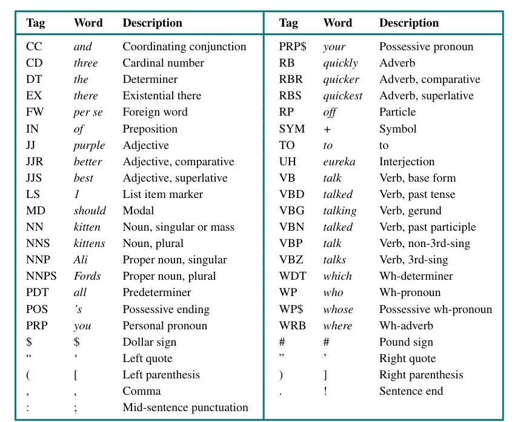
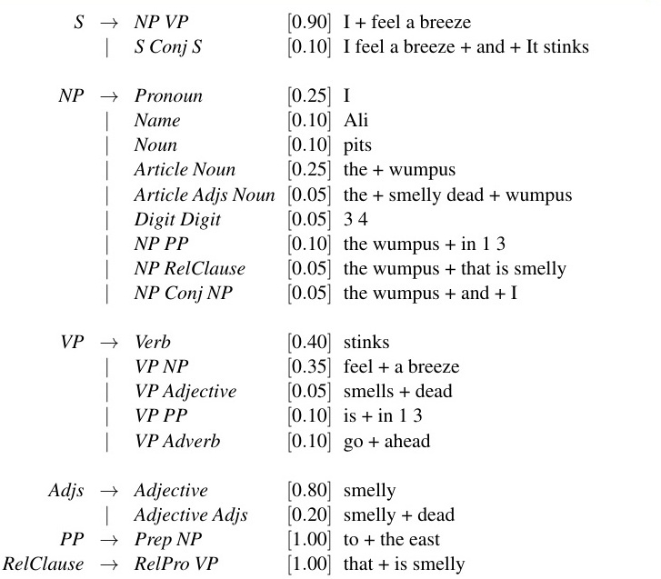
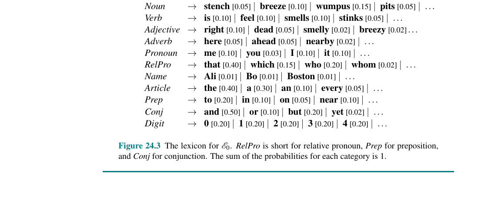
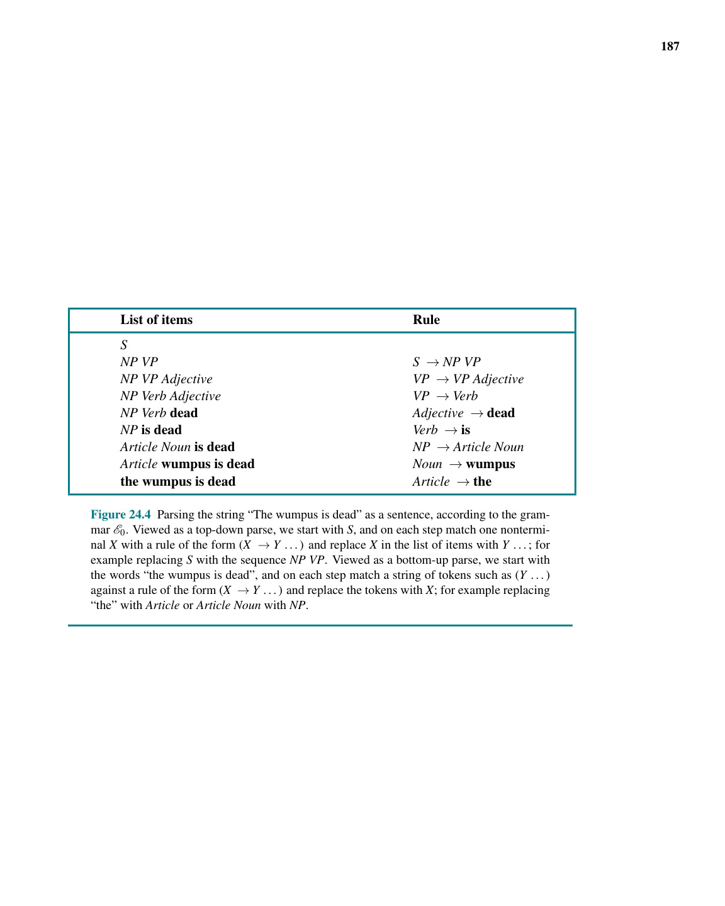
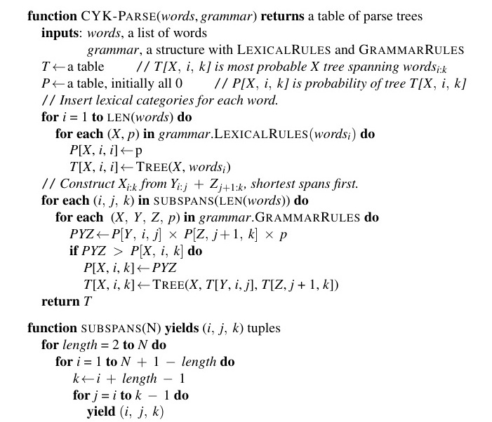
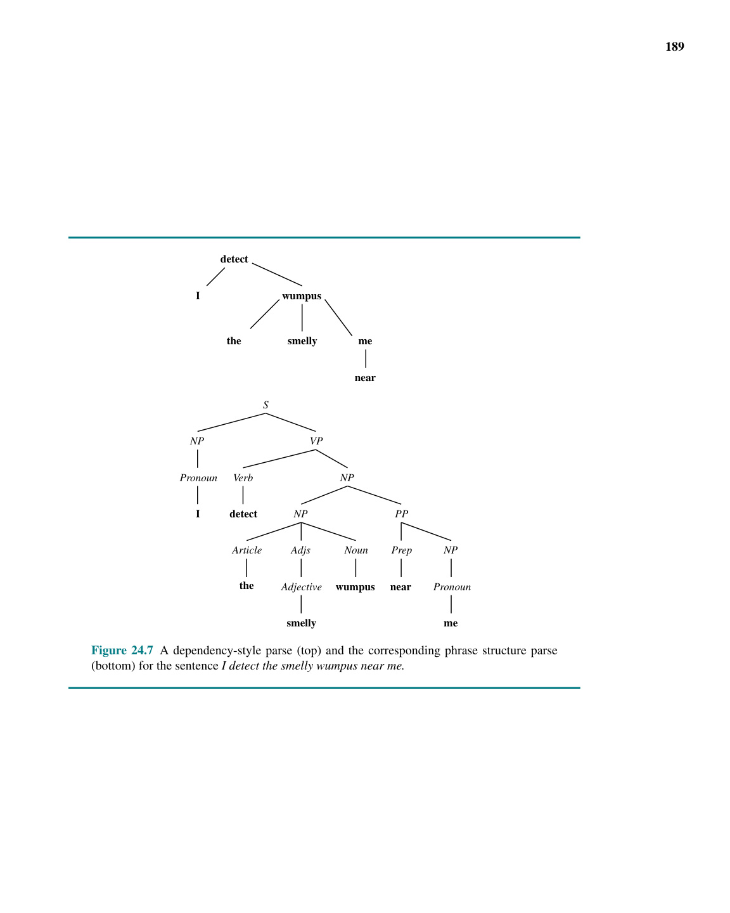
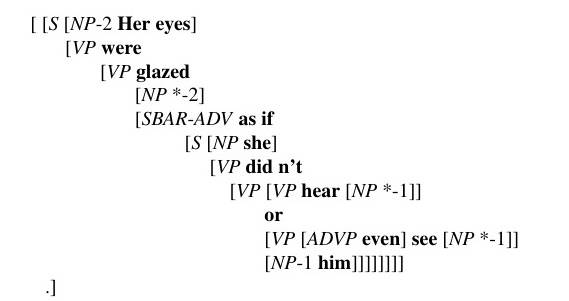
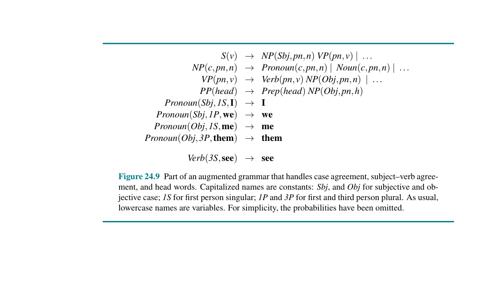
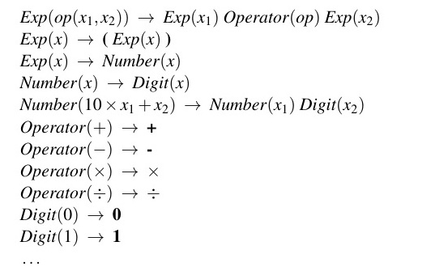
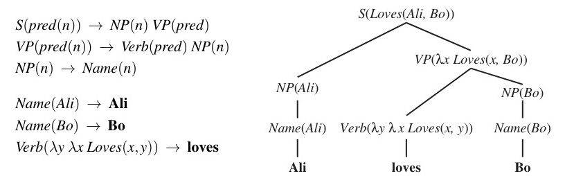

CHƯƠNG 24
Trong đó chúng ta xem xét cách một máy tính có thể sử dụng ngôn ngữ tự nhiên để giao tiếp với con người và học hỏi từ những gì họ đã viết.
Khoảng 100.000 năm trước, con người đã học cách nói, và khoảng 5.000 năm trước họ đã học cách viết. Sự phức tạp và đa dạng của ngôn ngữ loài người đã phân biệt Homo sapiens (người tinh khôn) với tất cả các loài khác. Dĩ nhiên, có những đặc điểm khác cũng chỉ có ở con người: không có loài nào mặc quần áo, sáng tạo nghệ thuật hay dành hai giờ mỗi ngày trên mạng xã hội theo cách mà con người đang làm. Nhưng khi Alan Turing đề xuất bài kiểm tra trí tuệ của mình, ông đã dựa vào ngôn ngữ, không phải nghệ thuật hay thời trang, có lẽ vì phạm vi phổ quát của nó và vì ngôn ngữ nắm bắt rất nhiều hành vi thông minh: một người nói (hoặc người viết) có mục tiêu truyền đạt kiến thức, sau đó lập kế hoạch cho ngôn ngữ đại diện cho kiến thức đó, và hành động để đạt được mục tiêu. Người nghe (hoặc người đọc) tiếp nhận ngôn ngữ và suy diễn ý nghĩa mong muốn.
Loại giao tiếp thông qua ngôn ngữ này đã cho phép nền văn minh phát triển; nó là phương tiện chính để truyền tải kiến thức về văn hóa, pháp lý, khoa học và công nghệ. Có ba lý do chính để máy tính thực hiện xử lý ngôn ngữ tự nhiên (Natural language processing - NLP):
Trong chương này, chúng ta sẽ xem xét các mô hình toán học khác nhau cho ngôn ngữ và thảo luận về các tác vụ có thể đạt được bằng cách sử dụng chúng.
Các ngôn ngữ hình thức (formal languages), chẳng hạn như logic bậc nhất, được định nghĩa một cách chính xác, như chúng ta đã thấy trong Chương 8. Một ngữ pháp định nghĩa cú pháp của các câu hợp lệ và các quy tắc ngữ nghĩa định nghĩa ý nghĩa. Tuy nhiên, các ngôn ngữ tự nhiên (Natural languages), chẳng hạn như tiếng Anh hay tiếng Trung, không thể được định nghĩa gọn gàng như vậy:
Nếu chúng ta không thể đưa ra một ranh giới phân biệt rạch ròi kiểu Boolean giữa các chuỗi đúng ngữ pháp và sai ngữ pháp, thì ít nhất chúng ta cũng có thể cho biết mỗi chuỗi có khả năng xảy ra (likelihood) hay không có khả năng xảy ra như thế nào.
Chúng ta định nghĩa một mô hình ngôn ngữ (language model) như một phân phối xác suất mô tả khả năng xảy ra của một chuỗi bất kỳ. Một mô hình như vậy sẽ cho biết rằng "Do I dare disturb the universe?" có một xác suất hợp lý để là một chuỗi tiếng Anh, nhưng "Universe dare the I disturb do?" thì cực kỳ khó xảy ra.
Với một mô hình ngôn ngữ, chúng ta có thể dự đoán những từ nào có khả năng sẽ xuất hiện tiếp theo trong một văn bản, và qua đó đề xuất các từ điền tiếp theo (completions) cho một email hoặc tin nhắn văn bản. Chúng ta có thể tính toán xem những thay đổi nào đối với văn bản sẽ làm cho nó có xác suất cao hơn, và từ đó đề xuất các sửa đổi lỗi chính tả hoặc ngữ pháp. Bằng việc dùng một cặp mô hình, chúng ta có thể tính toán bản dịch có xác suất cao nhất của một câu. Với một số ví dụ cặp câu hỏi/câu trả lời dùng làm dữ liệu huấn luyện, chúng ta có thể tính toán câu trả lời có khả năng nhất cho một câu hỏi. Vì vậy, các mô hình ngôn ngữ đóng vai trò cốt lõi trong vô số các tác vụ xử lý ngôn ngữ tự nhiên. Bản thân bài toán lập mô hình ngôn ngữ cũng đóng vai trò như một tiêu chuẩn đánh giá (benchmark) chung để đo lường sự tiến bộ trong lĩnh vực hiểu ngôn ngữ.
Các ngôn ngữ tự nhiên rất phức tạp, do đó bất kỳ mô hình ngôn ngữ nào, tốt nhất, cũng chỉ là một phép xấp xỉ (approximation). Nhà ngôn ngữ học Edward Sapir nói: "Không có ngôn ngữ nào nhất quán một cách độc đoán. Mọi ngữ pháp đều bị rò rỉ" (Sapir, 1921). Triết gia Donald Davidson nói "không có cái gọi là ngôn ngữ, nếu một ngôn ngữ không phải là . . . một cấu trúc chung được định nghĩa rõ ràng" (Davidson, 1986), qua đó ông muốn nói rằng không có một mô hình ngôn ngữ hoàn toàn chuẩn mực nào cho tiếng Anh theo cái cách mà nó tồn tại cho Python 3.8; tất cả chúng ta đều có những mô hình khác nhau, nhưng chúng ta bằng cách nào đó vẫn quản lý để vượt qua sự lộn xộn và giao tiếp với nhau. Trong phần này, chúng ta sẽ đề cập đến các mô hình ngôn ngữ đơn giản hóa vốn dĩ sai một cách rõ ràng, nhưng vẫn xoay sở để hữu ích cho một số tác vụ nhất định.
Mục 12.6.1 đã giải thích cách một mô hình Bayes ngây thơ (naive Bayes) dựa trên sự hiện diện của các từ cụ thể có thể phân loại văn bản vào các danh mục một cách đáng tin cậy; ví dụ như câu (1) dưới đây được xếp vào danh mục kinh doanh (business), và (2) vào danh mục thời tiết (weather).
Phần này xem xét lại mô hình naive Bayes, biến nó thành một mô hình ngôn ngữ hoàn chỉnh. Điều đó có nghĩa là chúng ta không chỉ muốn biết danh mục nào có khả năng nhất cho mỗi câu; chúng ta muốn có một phân phối xác suất đồng thời (joint probability distribution) trên tất cả các câu và danh mục. Điều đó gợi ý rằng chúng ta nên xem xét tất cả các từ trong câu. Cho một câu bao gồm các từ \(w_1, w_2, \dots, w_N\) (mà chúng ta sẽ viết là \(w_{1:N}\), như trong Chương 14), công thức naive Bayes cung cấp cho chúng ta:
$$ P(\text{Class} | w_{1:N}) = \alpha P(\text{Class}) \prod_{j} P(w_j | \text{Class}) $$
Sự áp dụng của naive Bayes vào các chuỗi từ được gọi là mô hình túi từ (bag-of-words model). Đây là một mô hình sinh (generative model) mô tả quá trình sinh ra một câu: Hãy tưởng tượng rằng đối với mỗi danh mục (kinh doanh, thời tiết, v.v.), chúng ta có một chiếc túi chứa đầy các từ (bạn có thể tưởng tượng mỗi từ được viết trên một mảnh giấy bên trong túi; từ càng phổ biến, nó càng được sao chép trên nhiều mảnh giấy). Để tạo ra văn bản, trước tiên hãy chọn một trong những chiếc túi và bỏ các túi khác đi. Thò tay vào chiếc túi đó và kéo ra một từ một cách ngẫu nhiên; đây sẽ là từ đầu tiên của câu. Sau đó đặt từ trở lại và rút một từ thứ hai. Lặp lại cho đến khi rút được một chỉ báo kết thúc câu (ví dụ: dấu chấm).
Mô hình này hiển nhiên là sai: nó giả định sai lầm rằng mỗi từ độc lập với các từ khác, và do đó nó không tạo ra các câu tiếng Anh mạch lạc. Nhưng nó cho phép chúng ta thực hiện việc phân loại với độ chính xác cao bằng công thức naive Bayes: các từ "cổ phiếu" (stocks) và "thu nhập" (earnings) là bằng chứng rõ ràng cho phần kinh doanh, trong khi "mưa" (rain) và "nhiều mây" (cloudy) gợi ý phần thời tiết.
Chúng ta có thể học các xác suất tiền nghiệm (prior probabilities) cần thiết cho mô hình này thông qua học có giám sát trên một khối văn bản hoặc tập ngữ liệu (corpus), nơi mỗi phân đoạn văn bản được gán nhãn với một lớp. Một corpus thường bao gồm ít nhất một triệu từ văn bản và ít nhất hàng chục nghìn từ vựng khác nhau. Gần đây, chúng ta đang thấy các tập ngữ liệu thậm chí còn lớn hơn được sử dụng, chẳng hạn như 2,5 tỷ từ trên Wikipedia hoặc tập ngữ liệu iWeb 14 tỷ từ được cạo (scraped) từ 22 triệu trang web.
Từ một corpus, chúng ta có thể ước lượng xác suất tiền nghiệm của từng danh mục, \(P(\text{Class})\), bằng cách đếm mức độ phổ biến của từng danh mục. Chúng ta cũng có thể sử dụng số đếm để ước lượng xác suất có điều kiện của mỗi từ với danh mục được cho, \(P(w_j | \text{Class})\). Ví dụ: nếu chúng ta đã thấy 3000 văn bản và 300 văn bản trong số đó được phân loại là kinh doanh, thì chúng ta có thể ước lượng \(P(\text{Class} = \text{business}) \approx 300/3000 = 0.1\). Và nếu trong danh mục kinh doanh, chúng ta đã thấy 100.000 từ và từ "stocks" xuất hiện 700 lần, thì chúng ta có thể ước lượng \(P(\text{stocks} | \text{Class} = \text{business}) \approx 700/100,000 = 0.007\). Việc ước lượng bằng cách đếm hoạt động tốt khi chúng ta có số đếm cao (và phương sai thấp), nhưng chúng ta sẽ thấy trong phần 24.1.4 một cách tốt hơn để ước lượng xác suất khi số đếm thấp.
Đôi khi, một phương pháp học máy khác, chẳng hạn như hồi quy logistic, mạng nơ-ron hoặc máy vector hỗ trợ (SVM), có thể hoạt động thậm chí còn tốt hơn cả naive Bayes. Các đặc trưng (features) của mô hình học máy là các từ trong từ vựng: "a", "aardvark", ..., "zyzzyva", và giá trị (values) là số lần mỗi từ xuất hiện trong văn bản (hoặc đôi khi chỉ là giá trị Boolean cho biết liệu từ đó có xuất hiện hay không). Điều đó làm cho vector đặc trưng trở nên lớn và thưa thớt (sparse) — chúng ta có thể có 100.000 từ trong mô hình ngôn ngữ và do đó có một vector đặc trưng có độ dài 100.000, nhưng đối với một văn bản ngắn, hầu như tất cả các đặc trưng sẽ bằng không.
Như chúng ta đã thấy, một số mô hình học máy hoạt động tốt hơn khi chúng ta thực hiện chọn lọc đặc trưng (feature selection), tự giới hạn ở một tập hợp con các từ dưới dạng đặc trưng. Chúng ta có thể loại bỏ những từ rất hiếm (và do đó có phương sai cao trong sức mạnh dự đoán của chúng), cũng như những từ phổ biến cho tất cả các lớp (chẳng hạn như "the") nhưng không mang tính phân biệt các lớp. Chúng bản cũng có thể trộn lẫn các đặc trưng khác vào cùng với các đặc trưng dựa trên từ của mình; ví dụ: nếu chúng ta đang phân loại email, chúng ta có thể thêm các đặc trưng cho người gửi, thời gian gửi tin nhắn, các từ trong tiêu đề chủ đề, sự hiện diện của dấu câu phi tiêu chuẩn, tỷ lệ phần trăm các chữ cái in hoa, liệu có tệp đính kèm hay không, v.v.
Lưu ý rằng việc quyết định đâu là một "từ" không hề tầm thường. "aren't" có phải là một từ không, hay nó nên được tách ra thành "aren / ' / t" hoặc "are / n't", hoặc một cái gì đó khác? Quá trình chia một văn bản thành một chuỗi các từ được gọi là quá trình mã hóa chuỗi (tokenization).
Mô hình túi từ có những hạn chế nhất định. Ví dụ, từ "quarter" (quý/phần tư) rất phổ biến trong cả hai danh mục kinh doanh (business) và thể thao (sports). Nhưng chuỗi bốn từ "first quarter earnings report" (báo cáo thu nhập quý đầu tiên) chỉ phổ biến trong lĩnh vực kinh doanh và "fourth quarter touchdown passes" (đường chuyền ghi điểm trong hiệp bốn) chỉ phổ biến trong thể thao. Chúng ta muốn mô hình của mình phân biệt được điều đó. Chúng ta có thể tinh chỉnh mô hình túi từ bằng cách xử lý các cụm từ đặc biệt như "first-quarter earnings report" giống như thể chúng là những từ đơn lẻ, nhưng một cách tiếp cận có nguyên tắc hơn là giới thiệu một mô hình mới, nơi mỗi từ phụ thuộc vào các từ trước đó. Chúng ta có thể bắt đầu bằng cách làm cho một từ phụ thuộc vào tất cả các từ trước đó trong một câu:
$$ P(w_{1:N}) = \prod_{j=1}^{N} P(w_j | w_{1:j-1}) $$
Theo một khía cạnh nào đó, mô hình này "đúng" một cách hoàn hảo ở chỗ nó nắm bắt tất cả các tương tác có thể có giữa các từ, nhưng nó không thực tế: với vốn từ vựng 100.000 từ và độ dài câu là 40, mô hình này sẽ có \(10^{200}\) tham số cần ước lượng. Chúng ta có thể thỏa hiệp bằng một mô hình chuỗi Markov chỉ xem xét sự phụ thuộc giữa \(n\) từ liền kề nhau. Mô hình này được gọi là mô hình n-gram (n-gram model) (bắt nguồn từ tiếng Hy Lạp "gramma" nghĩa là "thứ được viết"): một chuỗi các ký hiệu chữ viết có độ dài \(n\) được gọi là một n-gram, với các trường hợp đặc biệt "unigram" cho 1-gram, "bigram" cho 2-gram và "trigram" cho 3-gram. Trong mô hình n-gram, xác suất của mỗi từ chỉ phụ thuộc vào \(n-1\) từ liền trước nó; nghĩa là:
$$ P(w_j | w_{1:j-1}) = P(w_j | w_{j-n+1:j-1}) $$
$$ P(w_{1:N}) = \prod_{j=1}^{N} P(w_j | w_{j-n+1:j-1}) $$
Các mô hình N-gram hoạt động tốt trong việc phân loại các chuyên mục báo chí, cũng như cho các tác vụ phân loại khác như phát hiện thư rác (spam detection) (phân biệt email rác với email thông thường), phân tích cảm xúc (sentiment analysis) (phân loại đánh giá phim hoặc sản phẩm là tích cực hay tiêu cực) và xác định tác giả (author attribution) (Hemingway có phong cách và vốn từ vựng khác với Faulkner hay Shakespeare).
Một giải pháp thay thế cho mô hình n-gram cấp độ từ là mô hình cấp độ ký tự (character-level model), trong đó xác suất của mỗi ký tự được xác định bởi \(n-1\) ký tự trước đó. Cách tiếp cận này hữu ích khi đối phó với những từ chưa từng biết, và đối với những ngôn ngữ có xu hướng ghép các từ lại với nhau thành một từ dài, chẳng hạn như từ "Speciallægepraksisplanlægningsstabiliseringsperiode" trong tiếng Đan Mạch.
Các mô hình cấp độ ký tự rất phù hợp cho tác vụ nhận dạng ngôn ngữ (language identification): cho trước một văn bản, xác định xem nó được viết bằng ngôn ngữ nào. Thậm chí với những đoạn văn bản rất ngắn như "Hello, world" hay "Wie geht’s dir", các mô hình chữ cái n-gram có thể xác định được câu đầu là tiếng Anh và câu sau là tiếng Đức, nói chung đạt độ chính xác lớn hơn 99%. (Những ngôn ngữ có quan hệ họ hàng gần gũi như tiếng Thụy Điển và tiếng Na Uy sẽ khó phân biệt hơn và đòi hỏi các mẫu văn bản dài hơn; ở đó, độ chính xác chỉ nằm trong khoảng 95%). Các mô hình ký tự rất giỏi trong những tác vụ phân loại nhất định, chẳng hạn như quyết định rằng "dextroamphetamine" là tên một loại thuốc, "Kallenberger" là tên người và "Plattsburg" là tên thành phố, ngay cả khi chúng ta chưa bao giờ nhìn thấy những từ này trước đây.
Một khả năng khác là mô hình skip-gram (skip-gram model), trong đó chúng ta đếm những từ nằm gần nhau nhưng bỏ qua một (hoặc nhiều) từ ở giữa chúng. Ví dụ: cho văn bản tiếng Pháp "je ne comprends pas", các 1-skip-bigram (bigram bỏ qua 1 từ) sẽ là "je comprends" và "ne pas". Việc thu thập những thứ này giúp tạo ra một mô hình tiếng Pháp tốt hơn, vì nó cho chúng ta biết về sự chia động từ ("je" đi với "comprends", chứ không phải "comprend") và phủ định ("ne" đi với "pas"); chúng ta sẽ không thể có được điều đó nếu chỉ sử dụng bigram thông thường.
Các n-gram có tần suất xuất hiện cao như "of the" có số lượng đếm (counts) rất lớn trong ngữ liệu huấn luyện (training corpus), vì vậy ước lượng xác suất của chúng có khả năng chính xác cao: nếu dùng một tập ngữ liệu huấn luyện khác, ta vẫn sẽ nhận được một ước lượng tương tự. Tuy nhiên, những n-gram có tần suất thấp lại có số lần đếm nhỏ, dễ bị ảnh hưởng bởi nhiễu ngẫu nhiên — chúng có phương sai cao. Các mô hình của chúng ta sẽ hoạt động tốt hơn nếu ta có thể làm mịn (smooth out) phương sai đó.
Hơn nữa, luôn có khả năng chúng ta sẽ được yêu cầu đánh giá một văn bản chứa một từ chưa biết hoặc nằm ngoài từ vựng (out-of-vocabulary word): một từ chưa bao giờ xuất hiện trong tập ngữ liệu huấn luyện. Nhưng sẽ là sai lầm nếu gán cho một từ như vậy xác suất bằng không, bởi vì khi đó xác suất của toàn bộ câu, \(P(w_{1:N})\), cũng sẽ bằng không.
Một cách để mô hình hóa các từ chưa biết là sửa đổi tập ngữ liệu huấn luyện bằng cách thay thế các từ hiếm gặp bằng một ký hiệu đặc biệt, theo truyền thống là <UNK>. Chúng ta có thể quyết định trước chỉ giữ lại khoảng 50.000 từ phổ biến nhất, hoặc tất cả các từ có tần suất lớn hơn 0,0001%, và thay thế phần còn lại bằng <UNK>. Sau đó, tính toán số lượng đếm n-gram cho tập ngữ liệu như bình thường, coi <UNK> giống như bất kỳ từ nào khác. Khi một từ chưa biết xuất hiện trong tập dữ liệu kiểm tra (test set), chúng ta sẽ tra cứu xác suất của nó dưới nhãn <UNK>. Đôi khi, các ký hiệu từ-chưa-biết khác nhau được sử dụng cho các kiểu dữ liệu khác nhau. Ví dụ: một chuỗi chữ số có thể được thay thế bằng <NUM> hoặc địa chỉ email là <EMAIL>. (Chúng ta lưu ý rằng cũng nên có một ký hiệu đặc biệt, chẳng hạn như <S>, để đánh dấu sự bắt đầu (và kết thúc) của một văn bản. Theo cách đó, khi công thức tính xác suất bigram yêu cầu lấy từ đứng trước từ đầu tiên, câu trả lời sẽ là <S>, chứ không phải là một lỗi báo ra).
Ngay cả sau khi đã xử lý các từ chưa biết, chúng ta vẫn gặp phải vấn đề với các n-gram chưa từng thấy (unseen n-grams). Ví dụ: một văn bản kiểm tra có thể chứa cụm từ "colorless aquamarine ideas" (những ý tưởng màu lục lam nhạt nhẽo), ba từ mà chúng ta có thể đã từng thấy riêng lẻ trong tập huấn luyện, nhưng chưa bao giờ thấy chúng theo đúng thứ tự đó. Vấn đề là ở chỗ một số n-gram xác suất thấp xuất hiện trong ngữ liệu huấn luyện, trong khi các n-gram xác suất thấp tương đương khác lại tình cờ không xuất hiện chút nào. Chúng ta không muốn một số trong chúng có xác suất bằng 0 trong khi những cái khác lại có xác suất dương nhỏ; chúng ta muốn áp dụng sự làm mịn (smoothing) cho tất cả các n-gram tương tự — để dành một phần khối lượng xác suất của mô hình cho những n-gram chưa từng được thấy, nhằm giảm phương sai của mô hình.
Kiểu làm mịn đơn giản nhất được Pierre-Simon Laplace đề xuất vào thế kỷ 18 để ước tính xác suất của các sự kiện hiếm gặp, chẳng hạn như việc mặt trời ngày mai không mọc. Lý thuyết (sai lầm) của Laplace về hệ mặt trời cho rằng nó mới chỉ có tuổi đời khoảng \(N = 2\) triệu ngày. Dựa trên dữ liệu, có 0 trên tổng số hai triệu ngày mặt trời không mọc, nhưng chúng ta không muốn nói rằng xác suất đó chính xác bằng 0. Laplace đã chỉ ra rằng nếu chúng ta áp dụng xác suất tiền nghiệm đồng nhất (uniform prior), và kết hợp nó với các bằng chứng cho đến nay, chúng ta sẽ có được một ước lượng tốt nhất là \(1 / (N + 2)\) cho xác suất mặt trời không mọc vào ngày mai — hoặc nó sẽ mọc hoặc không (đó là số 2 ở mẫu số) và xác suất tiền nghiệm đồng nhất nói rằng khả năng xảy ra của cả hai là như nhau (đó là số 1 ở tử số). Làm mịn Laplace (Laplace smoothing) (còn được gọi là làm mịn cộng-một / add-one smoothing) là một bước đi đúng hướng, nhưng đối với nhiều ứng dụng ngôn ngữ tự nhiên, nó hoạt động khá kém hiệu quả.
Một lựa chọn khác là mô hình lùi bước (backoff model), trong đó chúng ta bắt đầu bằng cách ước lượng các giá trị đếm n-gram, nhưng đối với bất kỳ chuỗi cụ thể nào có số lần đếm thấp (hoặc bằng không), chúng ta sẽ lùi bước xuống thành \((n-1)\)-grams. Làm mịn nội suy tuyến tính (Linear interpolation smoothing) là một mô hình lùi bước kết hợp các mô hình trigram, bigram và unigram thông qua phép nội suy tuyến tính. Nó định nghĩa ước lượng xác suất như sau:
$$ \hat{P}(c_i | c_{i-2:i-1}) = \lambda_3 P(c_i | c_{i-2:i-1}) + \lambda_2 P(c_i | c_{i-1}) + \lambda_1 P(c_i) $$
Trong đó \(\lambda_3 + \lambda_2 + \lambda_1 = 1\). Giá trị của các tham số \(\lambda_i\) có thể được cố định, hoặc chúng có thể được huấn luyện bằng thuật toán kỳ vọng-cực đại (expectation-maximization). Cũng có thể thiết lập sao cho các giá trị \(\lambda_i\) phụ thuộc vào số lượng đếm (counts): nếu ta có số đếm trigram cao, ta sẽ ưu tiên trọng số cho chúng nhiều hơn; nếu số đếm thấp, ta sẽ đặt trọng số nhiều hơn vào các mô hình bigram và unigram.
Một trường phái các nhà nghiên cứu đã phát triển các kỹ thuật làm mịn ngày càng tinh vi hơn (như Witten-Bell và Kneser-Ney), trong khi một trường phái khác đề xuất việc thu thập một tập ngữ liệu (corpus) lớn hơn để ngay cả các kỹ thuật làm mịn đơn giản cũng có thể hoạt động tốt (một cách tiếp cận như vậy được gọi là "stupid backoff"). Cả hai đều hướng tới cùng một mục tiêu: giảm thiểu phương sai trong mô hình ngôn ngữ.
Các mô hình N-gram có thể cung cấp cho chúng ta một mô hình dự đoán chính xác xác suất của các chuỗi từ, chẳng hạn nói với chúng ta rằng "a black cat" (một con mèo đen) là một cụm từ tiếng Anh dễ xuất hiện hơn so với "cat black a", bởi vì "a black cat" xuất hiện trong khoảng 0.000014% các trigram trong ngữ liệu huấn luyện, trong khi "cat black a" thì không xuất hiện lần nào. Mọi thứ mà mô hình n-gram cấp độ từ biết được đều học từ số lượng đếm các chuỗi từ cụ thể.
Nhưng một người bản xứ tiếng Anh sẽ có một góc nhìn khác: "a black cat" là hợp lệ vì nó tuân theo một khuôn mẫu quen thuộc (mạo từ - tính từ - danh từ), trong khi "cat black a" thì không.
Bây giờ hãy xem xét cụm từ "the fulvous kitten" (chú mèo con màu nâu vàng). Một người nói tiếng Anh có thể nhận ra cụm từ này cũng tuân theo mẫu (mạo từ - tính từ - danh từ) (ngay cả người không biết "fulvous" có nghĩa là "màu nâu vàng" cũng có thể nhận ra rằng hầu hết các từ kết thúc bằng "-ous" đều là tính từ). Hơn nữa, người nói sẽ nhận ra mối liên hệ chặt chẽ về cú pháp giữa "a" và "the", cũng như mối quan hệ chặt chẽ về ngữ nghĩa giữa "cat" (mèo) và "kitten" (mèo con). Do đó, sự xuất hiện của "a black cat" trong dữ liệu chính là bằng chứng, thông qua sự khái quát hóa, rằng "the fulvous kitten" cũng là một cụm từ tiếng Anh hợp lệ.
Mô hình n-gram đã bỏ lỡ sự khái quát hóa này vì nó là một mô hình nguyên tử (atomic model): mỗi từ là một nguyên tử, phân biệt rạch ròi với mọi từ khác và không có cấu trúc nội tại. Chúng ta đã thấy xuyên suốt cuốn sách này rằng các mô hình thừa số hóa (factored) hoặc có cấu trúc (structured) cho phép năng lực biểu diễn mạnh mẽ hơn và khả năng khái quát hóa tốt hơn. Chúng ta sẽ thấy trong Phần 25.1 rằng một mô hình thừa số hóa được gọi là nhúng từ (word embeddings) mang lại khả năng khái quát hóa xuất sắc hơn.
Một loại mô hình từ có cấu trúc là từ điển (dictionary), thường được xây dựng thông qua sức lao động thủ công của con người. Ví dụ, WordNet là một từ điển mã nguồn mở, được biên soạn thủ công ở định dạng máy đọc được và đã chứng minh được tính hữu ích cho nhiều ứng dụng ngôn ngữ tự nhiên. Dưới đây là mục từ WordNet cho "kitten" (mèo con):
"kitten" <noun.animal> ("young domestic cat") IS A: young_mammal
"kitten" <verb.body> ("give birth to kittens")
EXAMPLE: "our cat kittened again this year"WordNet sẽ giúp bạn tách danh từ khỏi động từ, và có được các phân loại cơ bản (mèo con là động vật có vú chưa lớn, nằm trong lớp động vật có vú, thuộc giới động vật), nhưng nó sẽ không cho bạn biết chi tiết về việc một con mèo con trông như thế nào hoặc hành động ra sao. WordNet sẽ cho bạn biết rằng hai lớp con của "cat" là mèo Xiêm (Siamese cat) và mèo cộc đuôi (Manx cat), nhưng sẽ không nói thêm bất cứ điều gì về các giống mèo này.
| Thẻ (Tag) | Từ (Word) | Mô tả (Description) | Thẻ (Tag) | Từ (Word) | Mô tả (Description) |
|---|---|---|---|---|---|
| CC | and | Liên từ kết hợp (Coordinating conjunction) | PRP$ | your | Đại từ sở hữu (Possessive pronoun) |
| CD | three | Số đếm (Cardinal number) | RB | quickly | Trạng từ (Adverb) |
| DT | the | Hạn định từ (Determiner) | RBR | quicker | Trạng từ, so sánh hơn (Adverb, comparative) |
| EX | there | Từ tồn tại (Existential there) | RBS | quickest | Trạng từ, so sánh nhất (Adverb, superlative) |
| FW | per se | Từ ngoại lai (Foreign word) | RP | off | Tiểu từ (Particle) |
| IN | of | Giới từ (Preposition) | SYM | + | Ký hiệu (Symbol) |
| JJ | purple | Tính từ (Adjective) | TO | to | to |
| JJR | better | Tính từ, so sánh hơn (Adjective, comparative) | UH | eureka | Thán từ (Interjection) |
| JJS | best | Tính từ, so sánh nhất (Adjective, superlative) | VB | talk | Động từ, dạng nguyên thể (Verb, base form) |
| LS | 1 | Đánh dấu danh sách (List item marker) | VBD | talked | Động từ, quá khứ (Verb, past tense) |
| MD | should | Động từ khuyết thiếu (Modal) | VBG | talking | Danh động từ (Verb, gerund) |
| NN | kitten | Danh từ, số ít hoặc không đếm được | VBN | talked | Động từ, phân từ quá khứ (Verb, past participle) |
| NNS | kittens | Danh từ, số nhiều | VBP | talk | Động từ, không phải ngôi thứ 3 số ít |
| NNP | Ali | Danh từ riêng, số ít | VBZ | talks | Động từ, ngôi thứ 3 số ít (Verb, 3rd-sing) |
| NNPS | Fords | Danh từ riêng, số nhiều | WDT | which | Từ hạn định Wh (Wh-determiner) |
| PDT | all | Tiền hạn định từ (Predeterminer) | WP | who | Đại từ Wh (Wh-pronoun) |
| POS | ’s | Hậu tố sở hữu (Possessive ending) | WP$ | whose | Đại từ sở hữu Wh (Possessive wh-pronoun) |
| PRP | you | Đại từ nhân xưng (Personal pronoun) | WRB | where | Trạng từ Wh (Wh-adverb) |
| $ | $ | Dấu đô la (Dollar sign) | # | # | Dấu thăng (Pound sign) |
| “ | ‘ | Dấu ngoặc kép trái (Left quote) | ” | ’ | Dấu ngoặc kép phải (Right quote) |
| ( | [ | Dấu ngoặc đơn trái (Left parenthesis) | ) | ] | Dấu ngoặc đơn phải (Right parenthesis) |
| , | , | Dấu phẩy (Comma) | . | ! | Kết thúc câu (Sentence end) |
| : | ; | Dấu chấm câu giữa câu (Mid-sentence punctuation) |

Hình 24.1 Các thẻ từ loại (với một từ ví dụ cho mỗi thẻ) của kho ngữ liệu Penn Treebank (Marcus và cộng sự, 1993). Ở đây "3rd-sing" là viết tắt của "third person singular present tense" (ngôi thứ ba số ít thì hiện tại).
Một cách cơ bản để phân loại các từ là theo từ loại (part of speech - POS) của chúng, còn được gọi là phạm trù từ vựng (lexical category) hay thẻ (tag): danh từ, động từ, tính từ, v.v. Các từ loại cho phép các mô hình ngôn ngữ nắm bắt được những sự khái quát hóa, chẳng hạn như "tính từ thường đứng trước danh từ trong tiếng Anh." (Trong các ngôn ngữ khác, chẳng hạn như tiếng Pháp, điều này thường ngược lại).
Mọi người đều đồng ý rằng "danh từ" (noun) và "động từ" (verb) là các từ loại, nhưng khi đi vào chi tiết, không có một danh sách định nghĩa duy nhất nào cả. Hình 24.1 hiển thị 45 thẻ được sử dụng trong Penn Treebank, một kho ngữ liệu (corpus) gồm hơn ba triệu từ văn bản được chú thích bằng các thẻ từ loại. Như chúng ta sẽ thấy sau này, Penn Treebank cũng chú thích nhiều câu với các cây phân tích cú pháp (syntactic parse trees), từ đó tập ngữ liệu có cái tên như vậy. Dưới đây là một đoạn trích cho biết từ "from" được gắn thẻ là một giới từ (IN), "the" là một từ hạn định (DT), v.v:
From the start , it took a person with great qualities to succeed
IN DT NN , PRP VBD DT NN IN JJ NNS TO VBNhiệm vụ gán một từ loại cho mỗi từ trong một câu được gọi là gán nhãn từ loại (part-of-speech tagging). Mặc dù bản thân nó không thực sự thú vị, nhưng đây là một bước đầu tiên hữu ích trong nhiều tác vụ xử lý ngôn ngữ tự nhiên (NLP) khác, chẳng hạn như trả lời câu hỏi hoặc dịch máy. Ngay cả đối với một tác vụ đơn giản như tổng hợp văn bản thành giọng nói (text-to-speech synthesis), điều quan trọng là phải biết rằng danh từ "record" (bản ghi, kỷ lục) được phát âm khác với động từ "record" (ghi âm, ghi hình). Trong phần này, chúng ta sẽ xem xét cách hai mô hình quen thuộc có thể được áp dụng vào tác vụ gán nhãn này, và trong Chương 25, chúng ta sẽ xem xét một mô hình thứ ba.
Một mô hình phổ biến để gán thẻ POS là Mô hình Markov ẩn (Hidden Markov model - HMM). Nhắc lại từ Mục 14.3 rằng một mô hình Markov ẩn lấy vào một chuỗi quan sát thời gian (temporal sequence of evidence observations) và dự đoán các trạng thái ẩn có khả năng nhất có thể đã sinh ra chuỗi đó. Trong ví dụ HMM ở trang 491, bằng chứng bao gồm các quan sát về một người có mang ô (hoặc không), và trạng thái ẩn là trời mưa (hoặc không) ở thế giới bên ngoài. Đối với gán nhãn POS, bằng chứng là chuỗi các từ, \(W_{1:N}\), và các trạng thái ẩn là các phạm trù từ vựng, \(C_{1:N}\).
HMM là một mô hình sinh (generative model), phát biểu rằng cách để tạo ra ngôn ngữ là bắt đầu ở một trạng thái, chẳng hạn như IN (trạng thái của giới từ), và sau đó đưa ra hai sự lựa chọn: từ nào (chẳng hạn như "from") nên được phát ra (emitted), và trạng thái nào (chẳng hạn như DT) nên xuất hiện tiếp theo. Mô hình này không xem xét bất kỳ ngữ cảnh nào khác ngoài trạng thái từ loại hiện tại, cũng như không có ý tưởng gì về việc câu thực sự đang cố truyền đạt điều gì. Mặc dù vậy, nó vẫn là một mô hình hữu ích — nếu chúng ta áp dụng thuật toán Viterbi (Viterbi algorithm) (Phần 14.2.3) để tìm ra chuỗi các trạng thái ẩn (các thẻ) có xác suất cao nhất, chúng ta sẽ thấy rằng việc gán nhãn đạt được độ chính xác rất cao; thường là khoảng 97%.
Để tạo ra một HMM cho việc gán nhãn POS, chúng ta cần mô hình chuyển trạng thái (transition model), vốn cho biết xác suất của một từ loại theo sau một từ loại khác, \(P(C_t | C_{t-1})\), và mô hình cảm biến (sensor model), \(P(W_t | C_t)\). Ví dụ: \(P(C_t = \text{VB} | C_{t-1} = \text{MD}) = 0.8\) có nghĩa là khi cho trước một động từ khuyết thiếu (chẳng hạn như "would"), chúng ta có thể mong đợi từ tiếp theo sẽ là một động từ (chẳng hạn như "think") với xác suất 0.8. Con số 0.8 này từ đâu mà ra? Cũng giống như với các mô hình n-gram, nó đến từ số lượng đếm trong tập ngữ liệu (corpus), đi kèm với phương pháp làm mịn phù hợp. Thực tế cho thấy có 13.124 trường hợp xuất hiện của MD trong tập ngữ liệu Penn Treebank, và 10.471 trường hợp trong số đó được theo sau bởi một VB.
Đối với mô hình cảm biến, \(P(W_t = \text{would} | C_t = \text{MD}) = 0.1\) có nghĩa là khi chúng ta đang chọn một động từ khuyết thiếu, chúng ta sẽ chọn "would" trong 10% các trường hợp. Những con số này cũng đến từ việc đếm trên tập ngữ liệu, có kèm làm mịn.
Một điểm yếu của các mô hình HMM là mọi thứ chúng ta biết về ngôn ngữ đều phải được biểu diễn dưới dạng các mô hình chuyển trạng thái và mô hình cảm biến. Từ loại cho từ hiện tại chỉ được xác định duy nhất bởi các xác suất trong hai mô hình này và bởi từ loại của từ trước đó. Không có cách nào dễ dàng để nhà phát triển hệ thống nói rằng, chẳng hạn, bất kỳ từ nào kết thúc bằng "ous" có khả năng là một tính từ, hay trong cụm từ "attorney general" (tổng chưởng lý), "attorney" là một danh từ chứ không phải là một tính từ.
Rất may, Hồi quy Logistic (Logistic regression) lại có khả năng biểu diễn những thông tin dạng này. Nhắc lại từ Mục 19.6.5 rằng trong mô hình hồi quy logistic, đầu vào là một vector, \(\mathbf{x}\), gồm các giá trị đặc trưng (feature values). Sau đó chúng ta lấy tích vô hướng, \(\mathbf{w} \cdot \mathbf{x}\), của các đặc trưng đó với một vector trọng số \(\mathbf{w}\) đã được huấn luyện trước, và biến đổi tổng đó thành một con số từ 0 đến 1, có thể diễn giải như xác suất cho việc đầu vào là một ví dụ tích cực của một danh mục.
Các trọng số trong mô hình hồi quy logistic tương ứng với mức độ dự đoán của mỗi đặc trưng cho mỗi danh mục; các giá trị trọng số được học bằng phương pháp hạ dốc gradient (gradient descent). Đối với việc gán nhãn POS, chúng ta sẽ xây dựng 45 mô hình hồi quy logistic khác nhau, mỗi mô hình dành cho một từ loại, và hỏi mỗi mô hình xem xác suất để từ ví dụ là một thành viên của danh mục đó là bao nhiêu, với các giá trị đặc trưng đã cho đối với từ đó trong ngữ cảnh cụ thể của nó.
Câu hỏi đặt ra sau đó là các đặc trưng nên là gì? Các trình gán nhãn POS thường sử dụng các đặc trưng có giá trị nhị phân mã hóa thông tin về từ đang được gán nhãn, \(w_i\) (và có lẽ là các từ lân cận khác), cũng như danh mục đã được gán cho từ trước đó, \(c_{i-1}\) (và có lẽ là danh mục của các từ trước đó nữa). Các đặc trưng có thể phụ thuộc vào danh tính chính xác của một từ, một vài khía cạnh về cách nó được đánh vần, hoặc một vài thuộc tính từ một mục từ điển. Một bộ các đặc trưng gán nhãn POS có thể bao gồm:
Ví dụ, từ "walk" có thể là danh từ hoặc động từ, nhưng trong câu "I walk to school," đặc trưng ở hàng cuối cùng, cột ngoài cùng bên trái có thể được dùng để phân loại "walk" thành động từ (VBP). Một ví dụ khác, từ "cut" có thể là danh từ (NN), động từ thì quá khứ (VBD), hoặc động từ thì hiện tại (VBP). Cho câu "Yesterday I cut the rope," đặc trưng ở hàng cuối cùng, cột bên phải có thể giúp gán thẻ cho "cut" là VBD, trong khi trong câu "Now I cut the rope," đặc trưng nằm ngay phía trên đó có thể giúp gán thẻ cho "cut" là VBP.
Tổng cộng, có thể có cả triệu đặc trưng, nhưng đối với bất kỳ từ nào được cho, chỉ có khoảng vài chục đặc trưng là khác không (nonzero). Các đặc trưng này thường được thủ công xây dựng bởi một nhà thiết kế hệ thống là con người, người đã nghĩ ra những khuôn mẫu đặc trưng thú vị.
Hồi quy logistic không có khái niệm về chuỗi đầu vào — bạn cung cấp cho nó một vector đặc trưng đơn lẻ (thông tin về một từ đơn lẻ) và nó tạo ra một đầu ra (một thẻ tag). Nhưng chúng ta có thể buộc hồi quy logistic phải xử lý một chuỗi thông qua tìm kiếm tham lam (greedy search): bắt đầu bằng việc chọn danh mục có khả năng nhất cho từ đầu tiên, rồi chuyển tiếp tới các từ còn lại theo thứ tự từ trái sang phải. Ở mỗi bước, danh mục \(c_i\) được gán theo công thức:
$$ c_i = \text{argmax}_{c' \in \text{Categories}} P(c' | w_{1:N}, c_{1:i-1}) $$
Nghĩa là, bộ phân loại được phép xem xét bất kỳ đặc trưng nào (ngoài các đặc trưng danh mục) của bất kỳ từ nào ở bất cứ đâu trong câu (vì các đặc trưng này đều cố định), cũng như bất kỳ danh mục nào đã được gán trước đó.
Lưu ý rằng tìm kiếm tham lam đưa ra sự lựa chọn danh mục dứt khoát cho từng từ, và sau đó chuyển sang từ tiếp theo; nếu sự lựa chọn đó bị mâu thuẫn bởi các bằng chứng ở phần sau của câu, thì sẽ không có khả năng quay lại và đảo ngược lựa chọn. Điều đó khiến thuật toán hoạt động nhanh. Ngược lại, thuật toán Viterbi giữ một bảng tất cả các lựa chọn danh mục có thể có ở mỗi bước và luôn có tùy chọn thay đổi. Điều đó làm cho thuật toán chính xác hơn, nhưng chậm hơn.
Đối với cả hai thuật toán, một giải pháp thỏa hiệp là tìm kiếm theo chùm (beam search), trong đó chúng ta xem xét mọi danh mục có thể có ở mỗi bước thời gian, nhưng sau đó chỉ giữ lại \(b\) thẻ tag có khả năng cao nhất, loại bỏ các thẻ ít có khả năng hơn khác. Việc thay đổi giá trị của \(b\) mang tính đánh đổi (trades off) giữa tốc độ và độ chính xác.
Mô hình Naive Bayes và mô hình Markov ẩn đều là các mô hình sinh (generative models) (xem Mục 21.2.3). Nghĩa là, chúng học một phân phối xác suất đồng thời, \(P(W, C)\), và chúng ta có thể tạo ra một câu ngẫu nhiên bằng cách lấy mẫu (sampling) từ phân phối xác suất đó để nhận được từ đầu tiên (kèm danh mục) của câu, và sau đó thêm lần lượt từng từ một.
Mặt khác, hồi quy logistic là một mô hình phân biệt (discriminative model). Nó học một phân phối xác suất có điều kiện \(P(C|W)\), nghĩa là nó có thể gán danh mục cho một chuỗi từ đầu vào, nhưng nó không thể sinh ra các câu ngẫu nhiên. Nói chung, các nhà nghiên cứu đã phát hiện ra rằng các mô hình phân biệt có tỷ lệ lỗi thấp hơn, có lẽ vì chúng mô hình hóa trực tiếp đầu ra mong muốn và có lẽ vì chúng giúp các nhà phân tích dễ dàng tạo ra các đặc trưng bổ sung hơn. Tuy nhiên, các mô hình sinh (generative models) lại có xu hướng hội tụ nhanh hơn, và do đó có thể được ưu tiên khi thời gian huấn luyện có sẵn là ngắn, hoặc khi dữ liệu huấn luyện bị hạn chế.
Để cảm nhận xem các mô hình n-gram khác nhau trông như thế nào, chúng tôi đã xây dựng các mô hình unigram (tức là túi từ), bigram, trigram và 4-gram trên các từ trong cuốn sách này và sau đó lấy mẫu ngẫu nhiên các chuỗi từ từ mỗi mô hình trong số bốn mô hình đó:
Từ mẫu nhỏ này, rõ ràng có thể thấy mô hình unigram là một phép xấp xỉ rất tệ đối với cả tiếng Anh nói chung và với một cuốn sách giáo khoa AI nói riêng, còn mô hình 4-gram thì tuy chưa hoàn hảo nhưng đã tốt hơn nhiều. Tiếp theo, để chứng minh cách các mẫu chuyển đổi giữa các nguồn huấn luyện (và chắc chắn không chỉ để cho vui), chúng tôi đã thêm văn bản của Kinh thánh King James vào mô hình 4-gram, mang lại những mẫu ngẫu nhiên sau đây:
Có một giới hạn đối với các mô hình n-gram — khi \(n\) tăng lên, chúng sẽ tạo ra thứ ngôn ngữ trôi chảy hơn, nhưng chúng có xu hướng sao chép lại nguyên văn các đoạn văn dài từ dữ liệu huấn luyện, thay vì tạo ra các văn bản mới lạ. Các mô hình ngôn ngữ với các biểu diễn cấu trúc từ và ngữ cảnh phức tạp hơn có thể làm tốt hơn. Phần còn lại của chương này minh họa cách mà ngữ pháp có thể cải thiện một mô hình ngôn ngữ, và Chương 25 chỉ ra cách các phương pháp học sâu (deep learning) gần đây đã tạo ra các mô hình ngôn ngữ ấn tượng. Một mô hình học sâu như vậy là GPT-2, có thể tạo ra các mẫu tiếng Anh trôi chảy khi được cung cấp một đoạn gợi ý (prompt). Chúng tôi đã cung cấp cho GPT-2 hai câu đầu tiên của đoạn văn này để làm prompt; nó đã tạo ra hai đoạn mẫu sau:
Chúng ta thấy rằng những đoạn văn này đa dạng và trôi chảy về mặt ngữ pháp; hơn nữa, chúng bám sát các chủ đề liên quan đến câu gợi ý ban đầu. Nhưng các câu không dựa trên nhau để thúc đẩy một luận điểm mạch lạc. Mô hình ngôn ngữ GPT-2 được biết đến với tên gọi mô hình transformer, vốn sẽ được đề cập ở Phần 25.4; các ví dụ khác về GPT-2 nằm ở Hình 25.14.
Một mô hình transformer khác là Ngôn ngữ Transformer có Điều kiện (Conditional Transformer Language), CTRL. Nó có thể được kiểm soát linh hoạt hơn; trong các mẫu sau, CTRL đã được yêu cầu tạo văn bản trong chuyên mục đánh giá sản phẩm, với xếp hạng lần lượt là 1 và 4 (trên 5) được chỉ định trước:
Trong Chương 7, chúng ta đã sử dụng Hình thức Backus–Naur (Backus–Naur Form - BNF) để viết ra một ngữ pháp cho ngôn ngữ của logic bậc nhất. Một ngữ pháp là một tập hợp các quy tắc xác định cấu trúc cây của các cụm từ cho phép, và một ngôn ngữ là tập hợp các câu tuân theo các quy tắc đó.
Các ngôn ngữ tự nhiên không hoạt động chính xác giống như ngôn ngữ hình thức của logic bậc nhất — chúng không có ranh giới cứng nhắc giữa các câu hợp lệ và không hợp lệ, cũng như không có một cấu trúc cây rạch ròi duy nhất cho mỗi câu. Tuy nhiên, cấu trúc thứ bậc đóng vai trò quan trọng trong ngôn ngữ tự nhiên. Từ "Stocks" trong câu "Stocks rallied on Monday" không chỉ là một từ, cũng không chỉ là một danh từ; trong câu này nó còn cấu thành một cụm danh từ (noun phrase), đóng vai trò làm chủ ngữ cho cụm động từ (verb phrase) theo sau. Các phạm trù cú pháp (syntactic category) chẳng hạn như cụm danh từ hoặc cụm động từ giúp ràng buộc các từ có thể xuất hiện tại mỗi điểm bên trong câu, và cấu trúc cụm từ (phrase structure) cung cấp một khuôn khổ cho ngữ nghĩa của câu.
Có nhiều mô hình ngôn ngữ cạnh tranh nhau được dựa trên ý tưởng về cấu trúc cú pháp phân cấp; trong phần này, chúng ta sẽ mô tả một mô hình phổ biến có tên là ngữ pháp phi ngữ cảnh xác suất (probabilistic context-free grammar), hay PCFG. Một ngữ pháp xác suất gán một mức xác suất cho mỗi chuỗi, và "phi ngữ cảnh" (context-free) có nghĩa là bất kỳ quy tắc nào cũng có thể được sử dụng trong mọi ngữ cảnh: các quy tắc cho một cụm danh từ ở đầu câu cũng giống như quy tắc cho một cụm danh từ khác ở cuối câu, và nếu cùng một cụm từ xuất hiện ở hai vị trí, nó phải có cùng một xác suất mỗi lần. Chúng ta sẽ định nghĩa một ngữ pháp PCFG cho một phân mảnh nhỏ của tiếng Anh, vốn phù hợp cho giao tiếp giữa các tác nhân khám phá thế giới Wumpus. Chúng ta gọi ngôn ngữ này là \(\mathcal{E}_0\) (xem Hình 24.2). Một quy tắc ngữ pháp như:
Adjs → Adjective [0.80]
| Adjective Adjs [0.20]có nghĩa là danh mục cú pháp Adjs có thể bao gồm một Adjective (Tính từ) duy nhất với xác suất 0.80, hoặc một Adjective theo sau bởi một chuỗi tạo thành một Adjs với xác suất 0.20.
S → NP VP [0.90] I + feel a breeze
| S Conj S [0.10] I feel a breeze + and + It stinks
NP → Pronoun [0.25] I
| Name [0.10] Ali
| Noun [0.10] pits
| Article Noun [0.25] the + wumpus
| Article Adjs Noun [0.05] the + smelly dead + wumpus
| Digit Digit [0.05] 3 4
| NP PP [0.10] the wumpus + in 1 3
| NP RelClause [0.05] the wumpus + that is smelly
| NP Conj NP [0.05] the wumpus + and + I
VP → Verb [0.40] stinks
| VP NP [0.35] feel + a breeze
| VP Adjective [0.05] smells + dead
| VP PP [0.10] is + in 1 3
| VP Adverb [0.10] go + ahead
Adjs → Adjective [0.80] smelly
| Adjective Adjs [0.20] smelly + dead
PP → Prep NP [1.00] to + the east
RelClause → RelPro VP [1.00] that + is smelly
Hình 24.2 Ngữ pháp cho \(\mathcal{E}_0\), kèm ví dụ cho mỗi luật. Các phạm trù cú pháp là câu (Sentence - S), cụm danh từ (Noun phrase - NP), cụm động từ (Verb phrase - VP), danh sách tính từ (Adjs), cụm giới từ (Prepositional phrase - PP), và mệnh đề quan hệ (Relative clause - RelClause).
Noun → stench [0.05] | breeze [0.10] | wumpus [0.15] | pits [0.05] | ...
Verb → is [0.10] | feel [0.10] | smells [0.10] | stinks [0.05] | ...
Adjective → right [0.10] | dead [0.05] | smelly [0.02] | breezy [0.02]...
Adverb → here [0.05] | ahead [0.05] | nearby [0.02] | ...
Pronoun → me [0.10] | you [0.03] | I [0.10] | it [0.10] | ...
RelPro → that [0.40] | which [0.15] | who [0.20] | whom [0.02] | ...
Name → Ali [0.01] | Bo [0.01] | Boston [0.01] | ...
Article → the [0.40] | a [0.30] | an [0.10] | every [0.05] | ...
Prep → to [0.20] | in [0.10] | on [0.05] | near [0.10] | ...
Conj → and [0.50] | or [0.10] | but [0.20] | yet [0.02] | ...
Digit → 0 [0.20] | 1 [0.20] | 2 [0.20] | 3 [0.20] | 4 [0.20] | ...
Hình 24.3 Từ vựng cho \(\mathcal{E}_0\). RelPro là viết tắt của Đại từ quan hệ (relative pronoun), Prep cho Giới từ (preposition), và Conj cho Liên từ (conjunction). Tổng của các xác suất trong mỗi danh mục luôn bằng 1.
Thật không may, ngữ pháp này sinh ra thừa (overgenerates): nghĩa là nó tạo ra những câu không đúng ngữ pháp, chẳng hạn như "Me go I." Nó cũng sinh ra thiếu (undergenerates): có nhiều câu tiếng Anh đúng nhưng lại bị nó từ chối, chẳng hạn như "I think the wumpus is smelly." Sau này, chúng ta sẽ xem cách để học một ngữ pháp tốt hơn; bây giờ, chúng ta sẽ tập trung vào những gì chúng ta có thể làm với ngữ pháp rất đơn giản này.
Từ vựng (lexicon), hay danh sách các từ được cho phép, được định nghĩa trong Hình 24.3. Mỗi phạm trù từ vựng (lexical categories) đều kết thúc bằng ... để chỉ ra rằng còn có những từ khác trong danh mục đó. Đối với danh từ, tên riêng, động từ, tính từ và trạng từ, về nguyên tắc việc liệt kê tất cả các từ là bất khả thi. Không chỉ vì có hàng chục ngàn từ vựng trong mỗi lớp từ, mà các từ mới — như humblebrag (sự khiêm tốn giả tạo) hay microbiome (hệ vi sinh vật) — luôn liên tục được bổ sung thêm. Năm danh mục này được gọi là các lớp mở (open classes). Các đại từ, đại từ quan hệ, mạo từ, giới từ và liên từ được gọi là các lớp đóng (closed classes); chúng chỉ có một số lượng nhỏ các từ (khoảng hơn một tá), và chỉ thay đổi qua nhiều thế kỷ chứ không phải vài tháng. Ví dụ, "thee" và "thou" từng là những đại từ được sử dụng phổ biến trong thế kỷ 17, bắt đầu suy thoái vào thế kỷ 19, và ngày nay chỉ còn được bắt gặp trong thơ ca và một số phương ngữ vùng miền.
Phân tích cú pháp (Parsing) là quá trình phân tích một chuỗi các từ để khám phá ra cấu trúc cụm từ của nó, tuân theo các quy tắc của một ngữ pháp. Chúng ta có thể coi nó giống như một quá trình tìm kiếm một cây phân tích cú pháp hợp lệ mà phần lá của cây chính là các từ trong chuỗi. Hình 24.4 cho thấy chúng ta có thể bắt đầu với ký hiệu S và tìm kiếm từ trên xuống (top down), hoặc chúng ta có thể bắt đầu với các từ vựng và tìm kiếm từ dưới lên (bottom up). Tuy nhiên, các chiến lược phân tích từ-trên-xuống hoặc từ-dưới-lên thuần túy có thể không hiệu quả, bởi vì chúng có thể phải lặp lại công sức tìm kiếm ở những khu vực không gian tìm kiếm dẫn đến ngõ cụt. Xem xét hai câu sau:
Mặc dù chúng có chung 10 từ đầu tiên, hai câu này có cấu trúc phân tích cú pháp hoàn toàn khác nhau, vì câu đầu tiên là câu mệnh lệnh còn câu thứ hai là câu hỏi. Một thuật toán phân tích cú pháp từ-trái-sang-phải sẽ phải đoán xem từ đầu tiên là một phần của câu lệnh hay câu hỏi, và sẽ không thể biết được suy đoán đó có đúng hay không cho đến tận khi gặp từ thứ 11, "take" hoặc "taken". Nếu thuật toán đoán sai, nó sẽ phải quay lui (backtrack) về tận từ đầu tiên và phân tích lại toàn bộ câu theo cách diễn giải kia.
Để tránh sự kém hiệu quả này, chúng ta có thể sử dụng quy hoạch động (dynamic programming): mỗi khi phân tích một chuỗi con (substring), hãy lưu lại kết quả để chúng ta không phải phân tích lại nó sau này. Ví dụ: khi chúng ta phát hiện ra rằng "the students in section 2 of Computer Science 101" là một Cụm danh từ (NP), chúng ta có thể ghi lại kết quả đó vào một cấu trúc dữ liệu được gọi là biểu đồ (chart). Một thuật toán thực hiện điều này được gọi là bộ phân tích cú pháp biểu đồ (chart parser). Bởi vì chúng ta đang xử lý các ngữ pháp phi ngữ cảnh (context-free grammars), bất kỳ cụm từ nào được tìm thấy trong ngữ cảnh của một nhánh của cây tìm kiếm cũng đều có thể hoạt động tốt như thế trong bất kỳ nhánh nào khác của cây tìm kiếm. Có nhiều loại chart parsers; chúng tôi xin mô tả một phiên bản xác suất của thuật toán phân tích cú pháp biểu đồ từ-dưới-lên có tên là thuật toán CYK, được đặt theo tên những người phát minh ra nó: Ali Cocke, Daniel Younger, và Tadeo Kasami. (Đôi khi tên các tác giả được xếp theo thứ tự CKY).
| Danh sách các mục (List of items) | Luật (Rule) |
|---|---|
S | S → NP VP |
NP VP | VP → VP Adjective |
NP VP Adjective | VP → Verb |
NP Verb Adjective | Adjective → dead |
NP Verb dead | Verb → is |
NP is dead | NP → Article Noun |
Article Noun is dead | Noun → wumpus |
Article wumpus is dead | Article → the |
the wumpus is dead |

Hình 24.4 Phân tích cú pháp chuỗi "The wumpus is dead" dưới dạng một câu (S), tuân theo ngữ pháp \(\mathcal{E}_0\). Dưới góc nhìn phân tích từ-trên-xuống (top-down), ta bắt đầu với S, ở mỗi bước sẽ khớp một ký hiệu không kết thúc (nonterminal) \(X\) với một luật có dạng (\(X \to Y \dots\)) và thay thế \(X\) trong danh sách các mục bằng \(Y \dots\); ví dụ như thay thế S bằng chuỗi NP VP. Dưới góc nhìn phân tích từ-dưới-lên (bottom-up), ta bắt đầu với các từ "the wumpus is dead", và ở mỗi bước sẽ khớp một chuỗi các token dạng (\(Y \dots\)) theo một luật có dạng (\(X \to Y \dots\)) và thay thế các token đó bằng \(X\); ví dụ như thay thế "the" bằng Article hoặc thay thế Article Noun bằng NP.
Thuật toán CYK được thể hiện trong Hình 24.5. Nó yêu cầu một ngữ pháp với tất cả các luật phải nằm ở một trong hai định dạng rất cụ thể: luật từ vựng (lexical rules) có dạng \(X \to \text{word} [p]\), và luật cú pháp (syntactic rules) có dạng \(X \to Y Z [p]\), với chính xác hai danh mục (category) ở phía bên phải. Định dạng ngữ pháp này, được gọi là Dạng Chuẩn Chomsky (Chomsky Normal Form), có vẻ mang tính hạn chế, nhưng thực tế không phải vậy: bất kỳ ngữ pháp phi ngữ cảnh nào cũng có thể được biến đổi tự động thành Dạng Chuẩn Chomsky.
function CYK-PARSE(words, grammar) returns a table of parse trees
inputs: words, a list of words
grammar, a structure with LEXICALRULES and GRAMMARRULES
T ← a table
// T[X, i, k] là cây X có xác suất cao nhất bao phủ (spanning) đoạn từ words_i:k
P ← a table, initially all 0
// P[X, i, k] là xác suất của cây T[X, i, k]
// Chèn các từ loại (lexical categories) cho mỗi từ.
for i = 1 to LEN(words) do
for each (X, p) in grammar.LEXICALRULES(words_i) do
P[X, i, i] ← p
T[X, i, i] ← TREE(X, words_i)
// Xây dựng X_i:k từ Y_i:j + Z_j+1:k, các khoảng (spans) ngắn nhất được xử lý trước.
for each (i, j, k) in SUBSPANS(LEN(words)) do
for each (X, Y, Z, p) in grammar.GRAMMARRULES do
P_YZ ← P[Y, i, j] × P[Z, j+1, k] × p
if P_YZ > P[X, i, k] do
P[X, i, k] ← P_YZ
T[X, i, k] ← TREE(X, T[Y, i, j], T[Z, j + 1, k])
return T
function SUBSPANS(N) yields (i, j, k) tuples
for length = 2 to N do
for i = 1 to N + 1 - length do
k ← i + length - 1
for j = i to k - 1 do
yield (i, j, k)
Hình 24.5 Thuật toán CYK để phân tích cú pháp. Cho trước một chuỗi từ đầu vào, nó tìm ra cây phân tích cú pháp có xác suất cao nhất cho chuỗi đó và các chuỗi con của nó. Bảng \(P[X, i, k]\) cung cấp xác suất của cây phân tích có khả năng cao nhất của danh mục \(X\) bao phủ đoạn từ \(words_{i:k}\). Bảng kết quả trả về \(T[X, i, k]\) chứa cây có xác suất cao nhất thuộc danh mục \(X\) bao phủ các vị trí từ \(i\) đến \(k\) (tính cả 2 đầu mút). Hàm SUBSPANS trả về tất cả các bộ ba (i, j, k) bao phủ khoảng đoạn từ \(words_{i:k}\), với \(i \le j < k\), liệt kê các bộ giá trị này theo chiều tăng dần chiều dài khoảng \(i:k\), để khi chúng ta kết hợp hai khoảng ngắn thành một khoảng dài hơn, thì các khoảng ngắn này đã được tính toán xong và có sẵn trong bảng. Hàm LEXICALRULES(word) trả về một tập hợp các cặp \((X, p)\), ứng với mỗi luật có dạng \(X \to \text{word} [p]\), và hàm GRAMMARRULES cung cấp các bộ \((X,Y,Z,p)\), tương ứng với mỗi luật ngữ pháp có dạng \(X \to Y Z [p]\).
Thuật toán CYK sử dụng không gian bộ nhớ \(\mathcal{O}(n^2 m)\) cho các bảng \(P\) và \(T\), với \(n\) là số từ trong câu và \(m\) là số lượng các ký hiệu không kết thúc (nonterminal symbols) trong ngữ pháp, và tốn thời gian \(\mathcal{O}(n^3 m)\). Nếu chúng ta muốn một thuật toán đảm bảo hoạt động được với tất cả các ngữ pháp phi ngữ cảnh có thể có, thì chúng ta không thể làm gì tốt hơn mức này. Nhưng thực tế chúng ta chỉ muốn phân tích cú pháp các ngôn ngữ tự nhiên, chứ không phải mọi ngữ pháp khả dĩ. Ngôn ngữ tự nhiên đã tiến hóa theo hướng để con người dễ dàng hiểu được theo thời gian thực (real time), chứ không phải để trở nên rắc rối nhất có thể, vì vậy có vẻ như chúng hoàn toàn phù hợp với các thuật toán phân tích cú pháp nhanh hơn.
Để cố gắng đạt đến độ phức tạp \(\mathcal{O}(n)\), chúng ta có thể áp dụng tìm kiếm A* theo một cách khá trực tiếp: mỗi trạng thái là một danh sách các mục (các từ hoặc danh mục), như được thấy trong Hình 24.4. Trạng thái bắt đầu là một danh sách các từ và trạng thái đích là một mục đơn lẻ \(S\). Chi phí của một trạng thái là nghịch đảo xác suất của nó dựa trên các luật đã được áp dụng cho đến nay, và có nhiều hàm heuristic khác nhau được sử dụng để ước tính khoảng cách còn lại tới đích; những hàm heuristic tốt nhất hiện được sử dụng đến từ các phương pháp học máy áp dụng trên một kho ngữ liệu (corpus) các câu.
Với thuật toán A*, chúng ta không cần phải tìm kiếm trên toàn bộ không gian trạng thái, và chúng ta được đảm bảo rằng kết quả phân tích cú pháp đầu tiên tìm thấy sẽ là kết quả có xác suất cao nhất (giả sử sử dụng một hàm heuristic chấp nhận được - admissible heuristic). Thuật toán này thường sẽ nhanh hơn CYK, nhưng (tùy thuộc vào chi tiết của ngữ pháp) vẫn chậm hơn mức \(\mathcal{O}(n)\). Một ví dụ về kết quả của một bản phân tích cú pháp được hiển thị trong Hình 24.6.
Cũng giống như với việc gán nhãn từ loại (POS tagging), chúng ta có thể sử dụng tìm kiếm theo chùm (beam search) để phân tích cú pháp, trong đó tại bất kỳ thời điểm nào chúng ta cũng chỉ xem xét \(b\) bản phân tích cú pháp có xác suất cao nhất. Điều này có nghĩa là chúng ta không...
đảm bảo tìm thấy bản phân tích cú pháp có xác suất cao nhất, nhưng (với một quá trình triển khai cẩn thận) bộ phân tích cú pháp có thể hoạt động trong thời gian \(\mathcal{O}(n)\) và vẫn tìm thấy bản phân tích tốt nhất trong hầu hết các trường hợp.
Một bộ phân tích cú pháp tìm kiếm theo chùm với \(b = 1\) được gọi là một bộ phân tích cú pháp tất định (deterministic parser). Một cách tiếp cận tất định phổ biến là phân tích cú pháp dịch-thu gọn (shift-reduce parsing), trong đó chúng ta đi qua câu từng từ một, tại mỗi điểm chọn xem nên dịch (shift) từ đó vào một ngăn xếp (stack) các thành phần, hay thu gọn (reduce) (các) thành phần trên cùng trên ngăn xếp theo một quy tắc ngữ pháp. Mỗi kiểu phân tích cú pháp đều có những người ủng hộ riêng trong cộng đồng NLP. Mặc dù có thể chuyển đổi một hệ thống dịch-thu gọn thành một PCFG (và ngược lại), nhưng khi bạn áp dụng học máy vào bài toán quy nạp một ngữ pháp, thiên kiến quy nạp (inductive bias) và do đó là những khái quát hóa mà mỗi hệ thống đưa ra sẽ là khác nhau (Abney và cộng sự, 1999).

Hình 24.7 Một phân tích cú pháp theo kiểu phụ thuộc (trên cùng) và phân tích cú pháp cấu trúc cụm từ tương ứng (dưới cùng) cho câu I detect the smelly wumpus near me.
Có một phương pháp tiếp cận cú pháp thay thế được sử dụng rộng rãi gọi là ngữ pháp phụ thuộc (dependency grammar), giả định rằng cấu trúc cú pháp được hình thành bởi các quan hệ nhị phân giữa các mục từ vựng, mà không cần đến các thành phần cú pháp (syntactic constituents). Hình 24.7 cho thấy một câu với cả một cây phân tích cú pháp phụ thuộc và một cây phân tích cấu trúc cụm từ.
Theo một khía cạnh nào đó, ngữ pháp phụ thuộc và ngữ pháp cấu trúc cụm từ chỉ là các biến thể về mặt ký hiệu (notational variants). Nếu cây cấu trúc cụm từ được chú thích với phần trung tâm (head) của mỗi cụm từ, bạn có thể khôi phục cây phụ thuộc từ nó. Ở chiều ngược lại, chúng ta có thể chuyển đổi một cây phụ thuộc thành một cây cấu trúc cụm từ bằng cách đưa ra các danh mục tùy ý (mặc dù chúng ta có thể không phải lúc nào cũng nhận được một cái cây trông tự nhiên theo cách này).
[ [S [NP-2 Her eyes]
[VP were
[VP glazed
[NP *-2]
[SBAR-ADV as if
[S [NP she]
[VP did n’t
[VP [VP hear [NP *-1]]
or
[VP [ADVP even] see [NP *-1]]
[NP-1 him]]]]]]]]
.]
Hình 24.8 Cây được chú thích cho câu "Her eyes were glazed as if she didn’t hear or even see him." trích từ Penn Treebank. Lưu ý một hiện tượng ngữ pháp mà chúng ta chưa đề cập đến: sự di chuyển của một cụm từ từ phần này sang phần khác của cây. Cây này phân tích cụm từ "hear or even see him" như bao gồm hai thành phần VP, [VP hear [NP *-1]] và [VP [ADVP even] see [NP *-1]], cả hai đều có một tân ngữ bị thiếu, được biểu thị là *-1, dùng để tham chiếu đến NP được dán nhãn ở nơi khác trong cây dưới dạng [NP-1 him]. Tương tự, [NP *-2] tham chiếu đến [NP-2 Her eyes].
Do đó, chúng ta sẽ không ưu tiên ký hiệu này hơn ký hiệu kia chỉ vì nó mạnh hơn; thay vào đó, chúng ta sẽ thích một thứ hơn vì nó tự nhiên hơn — có thể quen thuộc hơn đối với các nhà phát triển hệ thống là con người, hoặc tự nhiên hơn đối với một hệ thống học máy sẽ phải học các cấu trúc đó. Nói chung, các cây cấu trúc cụm từ là tự nhiên đối với các ngôn ngữ (như tiếng Anh) với trật tự từ hầu như cố định; các cây phụ thuộc lại là tự nhiên đối với các ngôn ngữ (như tiếng Latinh) có trật tự từ chủ yếu là tự do, nơi trật tự của các từ được xác định bởi ngữ dụng học (pragmatics) nhiều hơn là bởi các phạm trù cú pháp.
Sự phổ biến của ngữ pháp phụ thuộc ngày nay phần lớn xuất phát từ dự án Phụ thuộc Phổ quát (Universal Dependencies) (Nivre và cộng sự, 2016), một dự án treebank nguồn mở định nghĩa một tập hợp các mối quan hệ và cung cấp hàng triệu câu đã được phân tích cú pháp bằng hơn 70 ngôn ngữ.
Việc xây dựng một ngữ pháp cho một phần đáng kể của tiếng Anh là rất tốn công sức và dễ xảy ra lỗi. Điều này cho thấy rằng việc học các luật ngữ pháp (và xác suất) sẽ tốt hơn là tự viết chúng ra bằng tay. Để áp dụng học có giám sát (supervised learning), chúng ta cần các cặp câu đầu vào/đầu ra và các cây phân tích cú pháp của chúng. Penn Treebank là nguồn dữ liệu nổi tiếng nhất thuộc loại này, với hơn 100 nghìn câu được chú thích bằng cấu trúc cây phân tích cú pháp. Hình 24.8 hiển thị một cây được chú thích từ Penn Treebank.
Cho trước một treebank, chúng ta có thể tạo ra một PCFG chỉ bằng cách đếm số lần mỗi loại nút (node-type) xuất hiện trong một cây (với những lưu ý thông thường về việc làm mịn các số đếm thấp). Trong Hình 24.8, có hai nút có dạng [S[NP...][VP...]]. Chúng ta sẽ đếm những nút này, và tất cả các cây con khác có gốc S trong tập ngữ liệu. Nếu có 1000 nút S trong đó có 600 nút có dạng này, thì chúng ta tạo ra luật:
S → NP VP [0.6]
Tổng cộng, Penn Treebank có hơn 10.000 loại nút khác nhau. Điều này phản ánh thực tế rằng tiếng Anh là một ngôn ngữ phức tạp, nhưng nó cũng chỉ ra rằng những người chú thích tạo ra treebank này lại ưa chuộng những cái cây phẳng (flat trees), có lẽ phẳng hơn mức chúng ta mong muốn. Ví dụ, cụm từ "the good and the bad" được phân tích dưới dạng một cụm danh từ đơn lẻ chứ không phải là hai cụm danh từ liên kết với nhau, mang lại cho chúng ta quy tắc:
NP → Article Noun Conjunction Article Noun
Có hàng trăm quy tắc tương tự định nghĩa một cụm danh từ dưới dạng một chuỗi các danh mục với một liên từ ở đâu đó ở giữa; một ngữ pháp súc tích hơn có thể nắm bắt tất cả các quy tắc cụm danh từ liên kết chỉ bằng một quy tắc đơn lẻ:
NP → NP Conjunction NP
Bod và cộng sự (2003) và Bod (2008) cho thấy cách khôi phục tự động các quy tắc khái quát như thế này, làm giảm đáng kể số lượng quy tắc được trích xuất từ treebank và tạo ra một ngữ pháp cuối cùng có thể khái quát hóa tốt hơn cho các câu chưa từng thấy trước đây. Họ gọi cách tiếp cận của mình là phân tích cú pháp hướng dữ liệu (data-oriented parsing).
Chúng ta đã thấy rằng các treebank không hoàn hảo — chúng chứa các lỗi và có các phân tích cú pháp mang tính đặc thù (idiosyncratic). Cũng rõ ràng rằng việc tạo ra một treebank đòi hỏi rất nhiều công việc khó khăn; điều đó có nghĩa là các treebank sẽ vẫn có kích thước tương đối nhỏ, so với tất cả các văn bản chưa được chú thích bằng cây. Một phương pháp tiếp cận thay thế là phân tích cú pháp không giám sát (unsupervised parsing), trong đó chúng ta học một ngữ pháp mới (hoặc cải thiện một ngữ pháp hiện có) bằng cách sử dụng một tập ngữ liệu các câu không có cây phân tích.
Thuật toán inside–outside (Dodd, 1988), mà chúng ta sẽ không đề cập ở đây, học cách ước lượng các xác suất trong một PCFG từ các câu ví dụ không có cây, tương tự như cách thuật toán forward-backward (Hình 14.4) ước lượng xác suất. Spitkovsky và cộng sự (2010a) mô tả một phương pháp học không giám sát sử dụng học theo chương trình (curriculum learning): bắt đầu với phần dễ của chương trình giảng dạy — những câu 2 từ ngắn gọn không mơ hồ như "He left" có thể dễ dàng được phân tích cú pháp dựa trên kiến thức hoặc chú thích trước đó. Mỗi bản phân tích cú pháp mới của một câu ngắn sẽ mở rộng kiến thức của hệ thống để cuối cùng nó có thể giải quyết các câu 3 từ, rồi 4 từ và cuối cùng là 40 từ.
Chúng ta cũng có thể sử dụng phân tích cú pháp bán giám sát (semisupervised parsing), trong đó chúng ta bắt đầu với một số lượng nhỏ các cây dưới dạng dữ liệu để xây dựng một ngữ pháp ban đầu, sau đó thêm vào một số lượng lớn các câu chưa được phân tích cú pháp để cải thiện ngữ pháp. Phương pháp tiếp cận bán giám sát có thể tận dụng lợi thế của đóng ngoặc một phần (partial bracketing): chúng ta có thể sử dụng các văn bản có sẵn rộng rãi đã được đánh dấu (marked up) bởi các tác giả (chứ không phải bởi các chuyên gia ngôn ngữ học), với một cấu trúc dạng cây một phần, dưới dạng định dạng HTML hoặc các chú thích tương tự. Trong văn bản HTML, hầu hết các dấu ngoặc nhọn tương ứng với một thành phần cú pháp, do đó việc đóng ngoặc một phần có thể giúp học được một ngữ pháp (Pereira và Schabes, 1992; Spitkovsky và cộng sự, 2010b). Xem xét văn bản HTML sau từ một bài báo trên tờ báo:
In 1998, however, as I <a>established in <i>The New Republic</i></a>
and Bill Clinton just <a>confirmed in his memoirs</a>, Netanyahu changed his mindCác từ được bao quanh bởi thẻ <i></i> tạo thành một cụm danh từ, và hai chuỗi từ được bao quanh bởi thẻ <a></a>, mỗi chuỗi tạo thành cụm động từ.
Cho đến nay, chúng ta đã làm việc với các ngữ pháp phi ngữ cảnh (context-free grammars). Nhưng không phải Cụm danh từ (NP) nào cũng có thể xuất hiện trong mọi ngữ cảnh với xác suất ngang nhau. Câu "I ate a banana" (Tôi đã ăn một quả chuối) thì ổn, nhưng "Me ate a banana" (Tân ngữ 'Tôi' đã ăn một quả chuối) thì sai ngữ pháp, và "I ate a bandanna" (Tôi đã ăn một chiếc khăn rằn) thì khó có khả năng xảy ra.
Vấn đề là ở chỗ ngữ pháp của chúng ta tập trung vào các phạm trù từ vựng (lexical categories), chẳng hạn như Pronoun (Đại từ), nhưng mặc dù cả "I" và "me" đều là đại từ, chỉ có "I" mới có thể làm chủ ngữ của một câu. Tương tự, "banana" và "bandanna" đều là danh từ, nhưng từ trước có nhiều khả năng làm tân ngữ của "ate" hơn nhiều so với từ sau. Các nhà ngôn ngữ học cho biết đại từ "I" ở cách chủ ngữ (subjective case - tức là chủ ngữ của một động từ) và "me" ở cách tân ngữ (objective case - tức là tân ngữ của một động từ). Họ cũng nói rằng "I" ở ngôi thứ nhất số ít ("you" là ngôi thứ hai, và "she" là ngôi thứ ba) ("we" là số nhiều). Một danh mục giống như Pronoun nếu được tăng cường thêm bằng các đặc trưng như "cách chủ ngữ, ngôi thứ nhất số ít" thì được gọi là một tiểu mục (subcategory).
Trong phần này, chúng tôi chỉ ra cách một ngữ pháp có thể biểu diễn loại kiến thức này để đưa ra những phân biệt chi tiết (finer-grained) hơn về việc những câu nào có khả năng xảy ra hơn. Chúng tôi cũng sẽ chỉ ra cách xây dựng một biểu diễn ngữ nghĩa của một cụm từ, theo phương thức hợp thành (compositional). Tất cả những điều này sẽ đạt được bằng một ngữ pháp tăng cường (augmented grammar), trong đó các ký hiệu không kết thúc không chỉ là các ký hiệu nguyên tử như Pronoun hoặc NP, mà là các biểu diễn có cấu trúc. Ví dụ: cụm danh từ "I" có thể được biểu diễn là NP(Sbj, 1S, Speaker), có nghĩa là "một cụm danh từ ở cách chủ ngữ, ngôi thứ nhất số ít, và có ngữ nghĩa là người nói của câu". Ngược lại, "me" sẽ được biểu diễn là NP(Obj, 1S, Speaker), đánh dấu thực tế rằng nó đang ở cách tân ngữ.
Xem xét chuỗi "Noun and Noun or Noun", chuỗi này có thể được phân tích cú pháp thành "[Noun and Noun] or Noun" hoặc "Noun and [Noun or Noun]". Ngữ pháp phi ngữ cảnh của chúng ta không có cách nào để bày tỏ sự ưu tiên cho cách phân tích này hơn cách phân tích kia, bởi vì quy tắc cho các cụm NP liên kết với nhau, NP → NP Conjunction NP [0.05], sẽ mang lại cùng một mức xác suất cho mỗi bản phân tích. Chúng ta sẽ muốn có một ngữ pháp thích các phân tích cú pháp "[[spaghetti and meatballs] or lasagna]" và "[spaghetti and [pie or cake]]" hơn là các cách đóng ngoặc thay thế cho mỗi cụm từ này.
Một PCFG được từ vựng hóa (lexicalized PCFG) là một loại ngữ pháp tăng cường cho phép chúng ta gán các xác suất dựa trên thuộc tính của các từ trong một cụm từ chứ không chỉ dựa vào các phạm trù cú pháp. Dữ liệu thực sự sẽ rất thưa thớt (sparse) nếu xác suất của, giả sử, một câu 40 từ phụ thuộc vào toàn bộ 40 từ — đây là cùng một vấn đề mà chúng ta đã ghi nhận với các n-gram. Để đơn giản hóa, chúng ta giới thiệu khái niệm phần trung tâm (head) của một cụm từ — từ quan trọng nhất. Vì vậy, "banana" là phần head của NP "a banana" và "ate" là phần head của VP "ate a banana". Ký hiệu VP(v) biểu thị một cụm từ có danh mục VP với từ trung tâm là v. Dưới đây là một lexicalized PCFG:
VP(v) → Verb(v) NP(n) [P1(v, n)]
VP(v) → Verb(v) [P2(v)]
NP(n) → Article(a) Adjs(j) Noun(n) [P3(n, a)]
NP(n) → NP(n) Conjunction(c) NP(m) [P4(n, c, m)]
Verb(ate) → ate [0.002]
Noun(banana) → banana [0.0007]S(v) → NP(Sbj, pn, n) VP(pn, v) | ...
NP(c, pn, n) → Pronoun(c, pn, n) | Noun(c, pn, n) | ...
VP(pn, v) → Verb(pn, v) NP(Obj, pn, n) | ...
PP(head) → Prep(head) NP(Obj, pn, h)
Pronoun(Sbj, 1S, I) → I
Pronoun(Sbj, 1P, we) → we
Pronoun(Obj, 1S, me) → me
Pronoun(Obj, 3P, them) → them
Verb(3S, see) → see
Hình 24.9 Một phần của một ngữ pháp tăng cường xử lý sự phù hợp về cách (case agreement), sự phù hợp giữa chủ ngữ-động từ (subject-verb agreement), và các từ trung tâm (head words). Các tên viết hoa là hằng số: Sbj, và Obj ứng với cách chủ ngữ (subjective) và cách tân ngữ (objective); 1S cho ngôi thứ nhất số ít; 1P và 3P cho ngôi thứ nhất và ngôi thứ ba số nhiều. Như thường lệ, các tên viết thường là các biến (variables). Để đơn giản, các giá trị xác suất đã được lược bỏ.
Ở đây P1(v, n) có nghĩa là xác suất của một VP (cụm động từ) có phần head là v kết hợp với một NP (cụm danh từ) có phần head là n để tạo thành một VP. Chúng ta có thể chỉ định rằng "ate a banana" (ăn một quả chuối) có khả năng xảy ra cao hơn "ate a bandanna" (ăn một cái khăn rằn) bằng cách đảm bảo rằng P1(ate, banana) > P1(ate, bandanna). Lưu ý rằng vì chúng ta chỉ đang xem xét các từ trung tâm (phrase heads), sự khác biệt giữa "ate a banana" và "ate a rancid banana" (ăn một quả chuối ôi thiu) sẽ không được bắt gặp bởi P1. Về mặt khái niệm, P1 là một bảng xác suất khổng lồ: nếu có 5.000 động từ và 10.000 danh từ trong từ vựng, thì P1 yêu cầu 50 triệu mục, nhưng hầu hết chúng sẽ không được lưu trữ một cách tường minh; thay vào đó chúng sẽ được suy ra từ quá trình làm mịn (smoothing) và lùi bước (backoff). Ví dụ: chúng ta có thể lùi bước từ P1(v, n) xuống một mô hình chỉ phụ thuộc vào v. Một mô hình như vậy sẽ yêu cầu số lượng tham số ít hơn 10.000 lần, nhưng vẫn có thể nắm bắt được những quy luật quan trọng, chẳng hạn như thực tế là một ngoại động từ như "ate" (ăn) có khả năng được theo sau bởi một NP (bất kể head là gì) cao hơn so với một nội động từ như "sleep" (ngủ).
Chúng ta đã thấy trong Phần 24.2 rằng ngữ pháp đơn giản cho \(\mathcal{E}_0\) sinh ra thừa, tạo ra những câu phi nghĩa như "I saw she" hoặc "I sees her". Để tránh vấn đề này, ngữ pháp của chúng ta phải biết rằng "her" chứ không phải "she" là một tân ngữ hợp lệ của "saw" (hoặc của bất kỳ động từ nào khác) và "see" chứ không phải "sees" là dạng động từ đi kèm với chủ ngữ "I".
Chúng ta có thể mã hóa những sự thật này một cách hoàn chỉnh vào trong các mục xác suất, ví dụ như đặt P1(v, she) là một con số rất nhỏ cho mọi động từ v. Nhưng sẽ gọn gàng và mang tính module hơn nếu tăng cường danh mục NP bằng các biến bổ sung: NP(c, pn, n) được sử dụng để đại diện cho một cụm danh từ có cách c (chủ ngữ hoặc tân ngữ), ngôi và số pn (ví dụ: ngôi thứ ba số ít), và danh từ trung tâm n. Hình 24.9 hiển thị một ngữ pháp được từ vựng hóa tăng cường nhằm xử lý các biến bổ sung này. Hãy xem xét chi tiết một quy tắc ngữ pháp:
S(v) → NP(Sbj, pn, n) VP(pn, v) [P5(n, v)]
Quy tắc này nói rằng khi một NP được theo sau bởi một VP, chúng có thể tạo thành một S (Câu), nhưng chỉ khi NP có cách chủ ngữ (Sbj) và ngôi cũng như số (pn) của NP và VP giống hệt nhau. (Chúng ta nói rằng chúng có sự hòa hợp - in agreement). Nếu điều đó thỏa mãn, chúng ta có một câu S có phần đầu là động từ từ VP. Đây là một ví dụ về luật từ vựng:
Pronoun(Sbj, 1S, I) → I [0.005]
luật này nói rằng "I" là một Đại từ (Pronoun) ở cách chủ ngữ, ngôi thứ nhất số ít, với từ trung tâm là "I".
Exp(op(x1, x2)) → Exp(x1) Operator(op) Exp(x2)
Exp(x) → ( Exp(x) )
Exp(x) → Number(x)
Number(x) → Digit(x)
Number(10 × x1 + x2) → Number(x1) Digit(x2)
Operator(+) → +
Operator(−) → -
Operator(×) → ×
Operator(÷) → ÷
Digit(0) → 0
Digit(1) → 1
...
Hình 24.10 Một ngữ pháp cho các biểu thức số học, được tăng cường thêm với ngữ nghĩa. Mỗi biến \(x_i\) đại diện cho ngữ nghĩa của một thành phần cấu tạo.
Để chỉ ra cách thêm ngữ nghĩa vào một ngữ pháp, chúng ta bắt đầu bằng một ví dụ đơn giản hơn tiếng Anh: ngữ nghĩa của các biểu thức số học. Hình 24.10 cho thấy một ngữ pháp cho các biểu thức số học, trong đó mỗi quy tắc được tăng cường bằng một đối số duy nhất biểu thị sự diễn giải ngữ nghĩa của cụm từ đó. Ngữ nghĩa của một chữ số chẳng hạn như "3" là chính chữ số đó. Ngữ nghĩa của biểu thức "3 + 4" là toán tử "+" được áp dụng cho ngữ nghĩa của các cụm từ "3" và "4". Các luật ngữ pháp tuân theo nguyên tắc của ngữ nghĩa hợp thành (compositional semantics) — ngữ nghĩa của một cụm từ là một hàm chức năng của ngữ nghĩa của các cụm từ con của nó. Hình 24.11 hiển thị cây phân tích cú pháp cho 3 + (4 ÷ 2) theo ngữ pháp này. Nút gốc của cây phân tích là Exp(5), một biểu thức có diễn giải ngữ nghĩa là 5.
Bây giờ chúng ta hãy chuyển sang ngữ nghĩa của tiếng Anh, hoặc ít nhất là một phần nhỏ của nó. Chúng ta sẽ sử dụng logic bậc nhất (first-order logic) cho việc biểu diễn ngữ nghĩa. Vì vậy, câu đơn giản "Ali loves Bo" sẽ nhận được biểu diễn ngữ nghĩa là Loves(Ali, Bo). Nhưng còn các cụm từ thành phần thì sao? Chúng ta có thể biểu diễn NP "Ali" bằng một term logic Ali. Nhưng VP "loves Bo" thì vừa không phải là một term logic vừa không phải là một câu logic hoàn chỉnh. Về mặt trực giác, "loves Bo" là một mô tả có thể áp dụng hoặc không áp dụng cho một người cụ thể. (Trong trường hợp này, nó áp dụng cho Ali). Điều này có nghĩa là "loves Bo" là một vị từ (predicate) mà khi kết hợp với một term đại diện cho một người, sẽ tạo ra một câu logic hoàn chỉnh.
Sử dụng ký hiệu \(\lambda\) (xem trang 277), chúng ta có thể biểu diễn "loves Bo" dưới dạng vị từ:
$$\lambda x \ Loves(x, \text{Bo})$$
Bây giờ chúng ta cần một quy tắc nói rằng "một NP với ngữ nghĩa n theo sau bởi một VP với ngữ nghĩa pred tạo ra một câu có ngữ nghĩa là kết quả của việc áp dụng pred cho n":
S(pred(n)) → NP(n) VP(pred)
Luật này nói cho chúng ta biết rằng việc diễn giải ngữ nghĩa của "Ali loves Bo" là:
$$(\lambda x \ Loves(x, \text{Bo}))(\text{Ali})$$
Hình 24.11 Cây phân tích cú pháp kèm diễn giải ngữ nghĩa cho chuỗi 3 + (4 ÷ 2).
S(pred(n)) → NP(n) VP(pred)
VP(pred(n)) → Verb(pred) NP(n)
NP(n) → Name(n)
Name(Ali) → Ali
Name(Bo) → Bo
Verb(λy λx Loves(x, y)) → loves(a)
S(Loves(Ali, Bo))
/ \
NP(Ali) VP(λx Loves(x, Bo))
| / \
Name(Ali) Verb(λy λx Loves(x, y)) NP(Bo)
| | |
Ali loves Name(Bo)
|
Bo(b)

Hình 24.12 (a) Một ngữ pháp có thể dẫn xuất ra một cây phân tích cú pháp và diễn giải ngữ nghĩa cho "Ali loves Bo" (và ba câu khác). Mỗi danh mục được tăng cường với một đối số duy nhất đại diện cho ngữ nghĩa. (b) Một cây phân tích cú pháp có diễn giải ngữ nghĩa cho chuỗi "Ali loves Bo".
tương đương với Loves(Ali, Bo). Về mặt kỹ thuật, chúng ta nói rằng đây là một phép rút gọn \(\beta\) (\(\beta\)-reduction) của việc áp dụng hàm lambda.
Phần còn lại của ngữ nghĩa tuân theo một cách trực tiếp từ những lựa chọn mà chúng ta đã thực hiện cho đến nay. Bởi vì các VP được biểu diễn dưới dạng các vị từ (predicates), các động từ cũng nên là các vị từ. Động từ "loves" được biểu diễn dưới dạng \(\lambda y \lambda x \ Loves(x, y)\), tức là vị từ mà, khi được cung cấp đối số là Bo, sẽ trả về vị từ \(\lambda x \ Loves(x, \text{Bo})\). Cuối cùng chúng ta có ngữ pháp và cây phân tích cú pháp được hiển thị trong Hình 24.12. Trong một ngữ pháp hoàn chỉnh hơn, chúng ta sẽ gộp tất cả các yếu tố tăng cường (ngữ nghĩa, cách, ngôi-số, và từ trung tâm) lại với nhau thành một tập hợp các quy tắc duy nhất. Ở đây chúng tôi chỉ hiển thị phần tăng cường ngữ nghĩa để làm rõ hơn cách các quy tắc này hoạt động.
Thật không may, Penn Treebank không bao gồm các biểu diễn ngữ nghĩa cho các câu của nó, mà chỉ có các cây cú pháp. Vì vậy, nếu chúng ta định học một ngữ pháp ngữ nghĩa, chúng ta sẽ cần một nguồn ví dụ khác. Zettlemoyer và Collins (2005) mô tả một hệ thống học một ngữ pháp cho hệ thống hỏi-đáp từ các ví dụ, bao gồm một câu được ghép nối với dạng ngữ nghĩa cho câu đó:
Cho trước một tập hợp lớn các cặp như thế này và một chút kiến thức được lập trình thủ công (hand-coded knowledge) cho mỗi miền mới, hệ thống sẽ tạo ra các mục từ vựng hợp lý (ví dụ: "Texas" và "state" là các danh từ sao cho state(Texas) là đúng), đồng thời học các tham số cho một ngữ pháp cho phép hệ thống phân tích các câu thành các biểu diễn ngữ nghĩa. Hệ thống của Zettlemoyer và Collins đã đạt độ chính xác 79% trên hai tập kiểm tra khác nhau gồm các câu chưa từng thấy. Zhao và Huang (2015) minh họa một bộ phân tích cú pháp dịch-thu gọn chạy nhanh hơn và đạt độ chính xác từ 85% đến 89%.
Hạn chế của các hệ thống này là dữ liệu huấn luyện bao gồm các dạng logic. Việc tạo ra chúng rất tốn kém, đòi hỏi những người chú thích là con người phải có chuyên môn sâu — không phải ai cũng hiểu được những điều tinh tế của phép tính lambda và logic vị từ. Việc thu thập các ví dụ về các cặp câu hỏi/câu trả lời sẽ dễ dàng hơn nhiều:
Những cặp câu hỏi/trả lời như vậy khá phổ biến trên Web, do đó một cơ sở dữ liệu lớn có thể được tổng hợp lại mà không cần tới các chuyên gia con người. Bằng cách sử dụng nguồn dữ liệu lớn này, người ta có thể xây dựng các bộ phân tích cú pháp vượt trội hơn so với những bộ sử dụng một cơ sở dữ liệu nhỏ các dạng logic được chú thích (Liang và cộng sự, 2011; Liang và Potts, 2015). Cách tiếp cận cốt lõi được mô tả trong các bài báo này là phát minh ra một dạng logic bên trong có tính chất hợp thành (compositional) nhưng không cho phép một không gian tìm kiếm lớn theo cấp số nhân.
Ngữ pháp của tiếng Anh thực tế phức tạp vô tận (và các ngôn ngữ khác cũng phức tạp không kém). Chúng tôi sẽ đề cập ngắn gọn về một số chủ đề góp phần tạo nên sự phức tạp này.
Lượng hóa (Quantification): Xem xét câu "Every agent feels a breeze" (Mọi tác nhân đều cảm thấy một luồng gió). Câu này chỉ có một phân tích cú pháp theo \(\mathcal{E}_0\), nhưng nó mơ hồ về mặt ngữ nghĩa: có phải có một luồng gió duy nhất mà tất cả các tác nhân đều cảm thấy, hay mỗi tác nhân lại cảm thấy một luồng gió riêng biệt của mình? Hai cách diễn giải có thể được biểu diễn như sau:
Một phương pháp tiếp cận tiêu chuẩn đối với lượng hóa là để cho ngữ pháp không định nghĩa một câu ngữ nghĩa logic thực sự, mà thay vào đó là một dạng bán logic (quasi-logical form) sau đó được biến thành một câu logic bởi các thuật toán bên ngoài quá trình phân tích cú pháp. Các thuật toán đó có thể có các quy tắc ưu tiên để chọn phạm vi lượng từ này so với phạm vi lượng từ khác — những sự ưu tiên không cần phải được phản ánh trực tiếp trong ngữ pháp.
Ngữ dụng học (Pragmatics): Chúng ta đã chỉ ra cách một tác nhân có thể nhận thức một chuỗi các từ và sử dụng một ngữ pháp để dẫn xuất ra một tập hợp các diễn giải ngữ nghĩa khả dĩ. Bây giờ chúng ta giải quyết bài toán hoàn thiện diễn giải bằng cách bổ sung thông tin phụ thuộc ngữ cảnh về tình huống hiện tại. Nhu cầu rõ ràng nhất đối với thông tin ngữ dụng là trong việc giải quyết ý nghĩa của các từ chỉ xuất (indexicals), là các cụm từ tham chiếu trực tiếp đến tình huống hiện tại. Ví dụ, trong câu "I am in Boston today", cả "I" và "today" đều là từ chỉ xuất. Từ "I" sẽ được biểu diễn bởi Speaker (Người nói), một fluent (đại lượng thay đổi theo thời gian) tham chiếu đến các đối tượng khác nhau ở các thời điểm khác nhau, và người nghe sẽ phải tự giải quyết xem đối tượng được tham chiếu của fluent đó là gì — điều đó không được coi là một phần của ngữ pháp mà đúng hơn là một vấn đề của ngữ dụng học.
Một phần khác của ngữ dụng học là diễn giải ý định của người nói. Lời phát biểu của người nói được coi là một hành động nói (speech act), và người nghe phải giải mã xem đó là loại hành động gì — một câu hỏi, một lời phát biểu, một lời hứa, một lời cảnh báo, một mệnh lệnh, v.v. Một mệnh lệnh chẳng hạn như "go to 2 2" ngầm ám chỉ người nghe. Cho đến nay, ngữ pháp cho \(S\) của chúng ta chỉ bao gồm các câu trần thuật (declarative sentences). Chúng ta có thể mở rộng nó để bao hàm các câu mệnh lệnh — một câu mệnh lệnh là một cụm động từ trong đó chủ ngữ ngầm định là người nghe của mệnh lệnh đó:
S(Command(pred(Hearer))) → VP(pred)
Phụ thuộc khoảng cách xa (Long-distance dependencies): Trong Hình 24.8, chúng ta đã thấy rằng "she didn't hear or even see him" được phân tích cú pháp với hai khoảng trống nơi thiếu một NP, nhưng lại tham chiếu đến NP "him". Chúng ta có thể sử dụng biểu tượng \(\square\) để biểu diễn các khoảng trống: "she didn't [hear \(\square\) or even see \(\square\)] him". Nói chung, khoảng cách giữa khoảng trống và NP mà nó tham chiếu có thể dài tùy ý: trong câu "Who did the agent tell you to give the gold to \(\square\)?" khoảng trống tham chiếu đến "Who", cách đó 11 từ.
Một hệ thống phức tạp gồm các quy tắc tăng cường có thể được sử dụng để đảm bảo rằng các NP bị thiếu được ghép nối khớp nhau một cách chính xác. Các quy tắc này rất phức tạp; ví dụ, bạn không thể có khoảng trống trong một nhánh của liên từ NP: "What did she play [NP Dungeons and \(\square\)]?" là câu sai ngữ pháp. Nhưng bạn có thể có cùng một khoảng trống ở cả hai nhánh của liên từ VP, như trong câu "What did you [VP [VP smell \(\square\)] and [VP shoot an arrow at \(\square\)]]?".
Thời gian và thì (Time and tense): Giả sử chúng ta muốn biểu diễn sự khác biệt giữa "Ali loves Bo" và "Ali loved Bo." Tiếng Anh sử dụng thì của động từ (past, present, và future) để chỉ thời gian tương đối của một sự kiện. Một lựa chọn tốt để biểu diễn thời gian của các sự kiện là ký hiệu phép tính sự kiện (event calculus) trong Phần 10.3. Trong phép tính sự kiện chúng ta có:
Điều này cho thấy hai quy tắc từ vựng của chúng ta đối với các từ "loves" và "loved" nên là như sau:
Verb(λy λx e ∈ Loves(x, y) ∧ During(Now, e)) → loves
Verb(λy λx e ∈ Loves(x, y) ∧ After(Now, e)) → loved.Ngoài sự thay đổi này ra, mọi thứ khác về ngữ pháp vẫn giữ nguyên, đây là một tin đáng khích lệ; nó cho thấy chúng ta đang đi đúng hướng nếu chúng ta có thể dễ dàng thêm một chi tiết phức tạp như thì của động từ (mặc dù chúng ta mới chỉ chạm vào bề nổi của một ngữ pháp hoàn chỉnh cho thời gian và thì).
Sự mơ hồ (Ambiguity): Chúng ta có xu hướng coi sự mơ hồ là một sự thất bại trong giao tiếp; khi một người nghe nhận thức được một sự mơ hồ trong một câu nói, điều đó có nghĩa là câu nói đó không rõ ràng hoặc gây bối rối. Đây là một số ví dụ lấy từ các tiêu đề báo chí:
Những sự nhầm lẫn như vậy là ngoại lệ; hầu hết thời gian, ngôn ngữ chúng ta nghe có vẻ rõ ràng. Do đó, khi các nhà nghiên cứu lần đầu tiên bắt đầu sử dụng máy tính để phân tích ngôn ngữ vào những năm 1960, họ đã khá ngạc nhiên khi biết rằng hầu như mọi câu đều mơ hồ, với nhiều cách phân tích cú pháp khả dĩ (đôi khi là hàng trăm), ngay cả khi cách phân tích được ưu tiên duy nhất là cách phân tích duy nhất mà người bản ngữ chú ý đến. Ví dụ, chúng ta hiểu cụm từ "brown rice and black beans" là "[brown rice] and [black beans]", và không bao giờ xem xét cách diễn giải xác suất thấp "brown [rice and black beans]", trong đó tính từ "brown" (màu nâu) bổ nghĩa cho toàn bộ cụm từ, chứ không chỉ cho "rice" (gạo). Khi nghe câu "Outside of a dog, a book is a person's best friend," chúng ta diễn giải "outside of" có nghĩa là "ngoại trừ", và thấy buồn cười khi câu tiếp theo trong trò đùa của Groucho Marx là "Inside of a dog it's too dark to read" (Bên trong một con chó thì quá tối để đọc sách).
Sự mơ hồ từ vựng (Lexical ambiguity) là khi một từ có nhiều hơn một ý nghĩa: "back" có thể là một trạng từ (go back), một tính từ (back door), một danh từ (the back of the room), một động từ (back a candidate), hoặc một danh từ riêng (một con sông ở Nunavut, Canada). "Jack" có thể là một tên riêng, một danh từ (một lá bài, một quân cờ kim loại sáu cánh, một lá cờ hàng hải, một con cá, một con chim, một loại phô mai, một cái ổ cắm, v.v.), hoặc một động từ (kích một chiếc ô tô lên, đi săn bằng đèn, hoặc đánh một quả bóng chày thật mạnh). Sự mơ hồ cú pháp (Syntactic ambiguity) đề cập đến một cụm từ có nhiều cách phân tích cú pháp: "I smelled a wumpus in 2,2" có hai cách phân tích: một là cụm giới từ "in 2,2" bổ nghĩa cho danh từ và hai là nó bổ nghĩa cho động từ. Sự mơ hồ cú pháp dẫn đến một sự mơ hồ ngữ nghĩa (semantic ambiguity), bởi vì một cách phân tích có nghĩa là con wumpus đang ở ô 2,2 và cách phân tích kia có nghĩa là một mùi hôi thối đang ở ô 2,2. Trong trường hợp này, việc diễn giải sai có thể là một sai lầm chết người.
Cũng có thể có sự mơ hồ giữa nghĩa đen và nghĩa bóng. Các biện pháp tu từ (figures of speech) rất quan trọng trong thơ ca, và cũng phổ biến trong lời nói hàng ngày. Hoán dụ (metonymy) là một biện pháp tu từ trong đó một đối tượng được sử dụng để đại diện cho một đối tượng khác. Khi nghe "Chrysler announced a new model" (Chrysler vừa công bố một mẫu xe mới), chúng ta không diễn giải điều đó nói rằng các công ty có thể nói chuyện; thay vào đó chúng ta hiểu rằng một người phát ngôn của công ty đó đã đưa ra thông báo. Hoán dụ rất phổ biến và thường được những người nghe diễn giải một cách vô thức.
Thật không may, ngữ pháp của chúng ta như được viết ra không dễ dàng như vậy. Để xử lý ngữ nghĩa của hoán dụ một cách chính xác, chúng ta cần đưa vào một mức độ mơ hồ hoàn toàn mới. Chúng ta có thể làm điều này bằng cách cung cấp hai đối tượng cho phần diễn giải ngữ nghĩa của mọi cụm từ trong câu: một đối tượng mà cụm từ đó tham chiếu tới theo nghĩa đen (Chrysler) và một tham chiếu hoán dụ (người phát ngôn). Sau đó, chúng ta phải nói rằng có một mối quan hệ giữa hai điều này. Trong ngữ pháp hiện tại của chúng ta, "Chrysler announced" được diễn giải là:
$$x = \text{Chrysler} \land e \in \text{Announce}(x) \land \text{After}(\text{Now}, \text{Extent}(e))$$
Chúng ta cần thay đổi điều đó thành:
$$x = \text{Chrysler} \land e \in \text{Announce}(m) \land \text{After}(\text{Now}, \text{Extent}(e)) \land \text{Metonymy}(m, x)$$
Điều này nói rằng có một thực thể \(x\) bằng với Chrysler, và một thực thể khác \(m\) đã thực hiện hành động thông báo, và cả hai có một mối quan hệ hoán dụ (Metonymy). Bước tiếp theo là xác định những loại quan hệ hoán dụ nào có thể xảy ra. Trường hợp đơn giản nhất là khi không có phép hoán dụ nào cả — đối tượng nghĩa đen \(x\) và đối tượng hoán dụ \(m\) là đồng nhất:
$$\forall m, x \ (m = x) \Rightarrow \text{Metonymy}(m, x)$$
Đối với ví dụ Chrysler, một sự tổng quát hóa hợp lý là một tổ chức có thể được sử dụng để đại diện cho một người phát ngôn của tổ chức đó:
$$\forall m, x \ x \in \text{Organizations} \land \text{Spokesperson}(m, x) \Rightarrow \text{Metonymy}(m, x)$$
Các ví dụ hoán dụ khác bao gồm lấy tác giả thay cho tác phẩm (Tôi đọc Shakespeare) hoặc tổng quát hơn là lấy nhà sản xuất thay cho sản phẩm (Tôi lái một chiếc Honda) và lấy bộ phận thay cho tổng thể (Đội Red Sox cần một cánh tay khỏe mạnh). Một số ví dụ về hoán dụ, chẳng hạn như "Cái bánh sandwich giăm bông ở bàn 4 muốn thêm một ly bia", mang tính mới mẻ hơn và được diễn giải liên quan đến một tình huống (chẳng hạn như đang phục vụ bàn và không biết tên của khách hàng).
Ẩn dụ (Metaphor) là một biện pháp tu từ khác, trong đó một cụm từ có một ý nghĩa đen này được sử dụng để gợi ý một ý nghĩa khác thông qua một sự loại suy (analogy). Do đó, ẩn dụ có thể được coi là một kiểu hoán dụ trong đó mối quan hệ là sự tương đồng.
Khử sự mơ hồ (Disambiguation) là quá trình khôi phục lại ý nghĩa dự định có xác suất cao nhất của một lời nói. Về một mặt, chúng ta đã có một khuôn khổ để giải quyết bài toán này: mỗi luật đều có một xác suất liên kết với nó, vì vậy xác suất của một cách diễn giải là tích của các xác suất của các luật đã dẫn đến cách diễn giải đó. Thật không may, các xác suất phản ánh mức độ phổ biến của các cụm từ trong kho ngữ liệu mà ngữ pháp đó được học, và do đó phản ánh kiến thức chung, chứ không phải kiến thức cụ thể của tình huống hiện tại. Để khử sự mơ hồ một cách thích hợp, chúng ta cần kết hợp bốn mô hình:
Xử lý ngôn ngữ tự nhiên là một lĩnh vực rộng lớn, xứng đáng có một hoặc hai cuốn sách giáo khoa riêng (Goldberg, 2017; Jurafsky và Martin, 2020). Trong phần này, chúng tôi mô tả ngắn gọn một số tác vụ chính; bạn có thể sử dụng các tài liệu tham khảo để biết thêm chi tiết.
Nhận dạng tiếng nói (Speech recognition) là tác vụ biến đổi âm thanh nói thành văn bản. Sau đó, chúng ta có thể thực hiện các tác vụ tiếp theo (chẳng hạn như trả lời câu hỏi) trên văn bản kết quả. Các hệ thống hiện tại có tỷ lệ lỗi từ (word error rate) vào khoảng 3% đến 5% (tùy thuộc vào chi tiết của tập kiểm tra), tương tự như người ghi chép. Thách thức đối với một hệ thống sử dụng nhận dạng tiếng nói là phải phản hồi một cách thích hợp ngay cả khi có lỗi trên từng từ riêng lẻ.
Các hệ thống hàng đầu hiện nay sử dụng sự kết hợp giữa các mạng nơ-ron hồi quy và các mô hình Markov ẩn (Hinton và cộng sự, 2012; Yu và Deng, 2016; Deng, 2016; Chiu và cộng sự, 2017; Zhang và cộng sự, 2017). Việc đưa vào sử dụng mạng nơ-ron sâu cho giọng nói vào năm 2011 đã dẫn đến một sự cải thiện ngay lập tức và đáng kinh ngạc lên tới khoảng 30% tỷ lệ lỗi — từ một lĩnh vực tưởng chừng như đã bão hòa và trước đó chỉ tiến bộ khoảng vài phần trăm mỗi năm. Mạng nơ-ron sâu rất phù hợp bởi vì bài toán nhận dạng tiếng nói có sự phân rã hợp thành một cách tự nhiên: từ dạng sóng thành âm vị (phonemes), thành từ, rồi thành câu. Chúng sẽ được đề cập trong chương tiếp theo.
Tổng hợp văn bản thành tiếng nói (Text-to-speech synthesis) là quá trình đảo ngược — đi từ văn bản sang âm thanh. Taylor (2009) đã cung cấp một cái nhìn tổng quan ở mức độ một cuốn sách về chủ đề này. Thách thức là phải phát âm chính xác từng từ, và làm cho luồng của mỗi câu có vẻ tự nhiên, với những khoảng dừng và nhấn giọng thích hợp.
Một lĩnh vực phát triển khác là tổng hợp các giọng nói khác nhau — bắt đầu với sự lựa chọn giữa giọng nam hoặc nữ chung chung, sau đó cho phép sử dụng các phương ngữ vùng miền, và thậm chí bắt chước giọng của những người nổi tiếng. Tương tự như nhận dạng tiếng nói, việc giới thiệu các mạng nơ-ron hồi quy sâu đã dẫn đến một sự cải tiến lớn, với khoảng 2/3 số người nghe cho rằng hệ thống neural WaveNet (van den Oord và cộng sự, 2016a) nghe tự nhiên hơn so với hệ thống phi-nơ-ron trước đó.
Dịch máy (Machine translation) chuyển đổi văn bản trong ngôn ngữ này sang ngôn ngữ khác. Các hệ thống thường được huấn luyện bằng cách sử dụng một kho ngữ liệu song ngữ: một tập hợp các tài liệu được ghép nối, trong đó một thành viên của cặp giả sử bằng tiếng Anh và thành viên còn lại giả sử bằng tiếng Pháp. Các tài liệu không cần phải được chú thích dưới bất kỳ hình thức nào; hệ thống dịch máy sẽ tự học cách gióng hàng các câu và cụm từ và sau đó khi được trình bày một câu mới lạ trong ngôn ngữ này, có thể tạo ra một bản dịch sang ngôn ngữ kia.
Các hệ thống vào đầu những năm 2000 đã sử dụng các mô hình n-gram và đạt được những kết quả thường là đủ tốt để truyền tải được ý nghĩa của một văn bản, nhưng lại chứa các lỗi cú pháp trong hầu hết các câu. Một vấn đề là giới hạn về chiều dài của các n-gram: ngay cả với một giới hạn lớn bằng 7, thông tin cũng khó có thể chảy từ đầu câu này sang đầu câu khác. Một vấn đề khác là mọi thông tin trong mô hình n-gram đều nằm ở cấp độ của các từ riêng lẻ. Một hệ thống như vậy có thể học được rằng "black cat" dịch là "chat noir", nhưng nó không thể học được quy luật rằng các tính từ nói chung thường đứng trước danh từ trong tiếng Anh và sau danh từ trong tiếng Pháp.
Các mô hình học sâu chuỗi-sang-chuỗi sử dụng nơ-ron hồi quy (Sutskever và cộng sự, 2015) đã khắc phục được vấn đề này. Chúng có thể khái quát hóa tốt hơn (bởi vì chúng có thể sử dụng biểu diễn nhúng từ - word embeddings, thay vì...
số đếm n-gram của các từ cụ thể) và có thể hình thành các mô hình hợp thành (compositional models) xuyên suốt các cấp độ khác nhau của mạng lưới học sâu để truyền đạt thông tin một cách hiệu quả. Nghiên cứu sau này sử dụng cơ chế tập trung sự chú ý (attention-focusing) của mô hình transformer (Vaswani và cộng sự, 2018) đã tăng hiệu suất hơn nữa, và một mô hình lai kết hợp các khía cạnh của cả hai mô hình này còn làm tốt hơn nữa, đạt đến hiệu suất gần tương đương con người trên một số cặp ngôn ngữ (Wu và cộng sự, 2016b; Chen và cộng sự, 2018).
Trích xuất thông tin (Information extraction) là quá trình thu nhận kiến thức bằng cách đọc lướt một văn bản và tìm kiếm sự xuất hiện của các lớp đối tượng cụ thể và các mối quan hệ giữa chúng. Một tác vụ điển hình là trích xuất các thông tin về địa chỉ từ các trang Web, với các trường cơ sở dữ liệu cho tên đường, thành phố, tiểu bang, và mã zip; hoặc các đợt bão từ các báo cáo thời tiết, với các trường cho nhiệt độ, tốc độ gió và lượng mưa. Nếu văn bản nguồn có cấu trúc tốt (ví dụ: ở dạng bảng), thì các kỹ thuật đơn giản như biểu thức chính quy (regular expressions) có thể trích xuất được thông tin (Cafarella và cộng sự, 2008). Sẽ khó hơn nếu chúng ta đang cố gắng trích xuất tất cả các dữ kiện thực tế, thay vì một loại cụ thể (chẳng hạn như báo cáo thời tiết); Banko và cộng sự (2007) mô tả hệ thống TEXTRUNNER thực hiện trích xuất trên một tập hợp các mối quan hệ đang mở rộng. Đối với văn bản tự do (free-form text), các kỹ thuật bao gồm mô hình Markov ẩn và các hệ thống học dựa trên quy tắc (rule-based) (như được sử dụng trong TEXTRUNNER và NELL (Never-Ending Language Learning) (Mitchell và cộng sự, 2018)). Các hệ thống gần đây hơn sử dụng mạng nơ-ron hồi quy, tận dụng sự linh hoạt của các biểu diễn nhúng từ (word embeddings). Bạn có thể tìm thấy một cái nhìn tổng quan trong bài báo của Kumar (2017).
Truy xuất thông tin (Information retrieval) là nhiệm vụ tìm kiếm các tài liệu có liên quan và quan trọng đối với một truy vấn nhất định. Các công cụ tìm kiếm trên Internet như Google và Baidu thực hiện nhiệm vụ này hàng tỷ lần mỗi ngày. Ba cuốn sách giáo khoa hay về chủ đề này là của Manning và cộng sự (2008), Croft và cộng sự (2010), và Baeza-Yates và Ribeiro-Neto (2011).
Trả lời câu hỏi (Question Answering) là một tác vụ khác, trong đó truy vấn thực sự là một câu hỏi, chẳng hạn như "Ai thành lập Lực lượng Bảo vệ Bờ biển Hoa Kỳ?" và phản hồi không phải là một danh sách các tài liệu được xếp hạng mà là một câu trả lời thực sự: "Alexander Hamilton." Đã có các hệ thống trả lời câu hỏi từ những năm 1960 dựa trên phân tích cú pháp (syntactic parsing) như được thảo luận trong chương này, nhưng chỉ từ năm 2001, các hệ thống như vậy mới sử dụng chức năng truy xuất thông tin trên Web để tăng mạnh phạm vi bao phủ của chúng. Katz (1997) mô tả bộ phân tích và trả lời câu hỏi START. Banko và cộng sự (2002) mô tả hệ thống ASKMSR, tuy kém tinh vi hơn về khả năng phân tích cú pháp, nhưng lại quyết liệt hơn trong việc sử dụng tìm kiếm Web và phân loại qua các kết quả. Ví dụ, để trả lời câu hỏi "Ai thành lập Lực lượng Bảo vệ Bờ biển Hoa Kỳ?", nó sẽ tìm kiếm các truy vấn chẳng hạn như [* founded the U.S. Coast Guard] và [the U.S. Coast Guard was founded by *], sau đó kiểm tra nhiều trang Web kết quả để chọn ra một câu trả lời có khả năng đúng cao nhất, biết rằng từ truy vấn "who" (ai) cho thấy câu trả lời nên là một người. Hội nghị Truy xuất Văn bản (Text REtrieval Conference - TREC) tập hợp các nghiên cứu về chủ đề này và đã tổ chức các cuộc thi hàng năm kể từ năm 1991 (Allan và cộng sự, 2017). Gần đây, chúng ta đã thấy các tập kiểm tra khác, chẳng hạn như tập kiểm tra câu hỏi khoa học cơ bản AI2 ARC (Clark và cộng sự, 2018).
Những điểm chính của chương này như sau:
Các mô hình n-gram ký tự dùng cho mô hình hóa ngôn ngữ đã được Markov (1913) đề xuất. Claude Shannon (Shannon và Weaver, 1949) là người đầu tiên tạo ra các mô hình từ n-gram cho tiếng Anh. Mô hình túi từ (bag-of-words) lấy tên từ một đoạn văn của nhà ngôn ngữ học Zellig Harris (1954), "ngôn ngữ không đơn thuần chỉ là một túi từ mà là một công cụ có các đặc tính cụ thể." Norvig (2009) đưa ra một số ví dụ về các tác vụ có thể đạt được với các mô hình n-gram.
Chomsky (1956, 1957) đã chỉ ra những hạn chế của mô hình trạng thái hữu hạn (finite-state) so với các mô hình phi ngữ cảnh (context-free), với kết luận: "Các mô hình xác suất không cung cấp cái nhìn sâu sắc cụ thể nào về một số vấn đề cơ bản của cấu trúc cú pháp." Điều này đúng, nhưng các mô hình xác suất lại mang đến cái nhìn sâu sắc cho một số vấn đề cơ bản khác — những vấn đề mà các mô hình phi ngữ cảnh bỏ qua. Nhận xét của Chomsky đã gây ra hệ lụy không may là làm nhiều người sợ hãi tránh xa các mô hình thống kê trong suốt hai thập kỷ, cho đến khi những mô hình này nổi lên lại và được dùng trong lĩnh vực nhận dạng tiếng nói (Jelinek, 1976), và trong khoa học nhận thức, nơi Lý thuyết Tính Tối ưu (optimality theory) (Smolensky và Prince, 1993; Kager, 1999) khẳng định rằng ngôn ngữ hoạt động bằng cách tìm ra ứng viên có xác suất cao nhất vốn thỏa mãn tối ưu các ràng buộc cạnh tranh nhau.
Phương pháp làm mịn Add-one (Add-one smoothing), lần đầu tiên được đề xuất bởi Pierre-Simon Laplace (1816), đã được công thức hóa bởi Jeffreys (1948). Các kỹ thuật làm mịn khác bao gồm làm mịn nội suy (interpolation smoothing) (Jelinek và Mercer, 1980), làm mịn Witten–Bell (1991), làm mịn Good–Turing (Church và Gale, 1991), làm mịn Kneser–Ney (1995, 2004), và "stupid backoff" (Brants và cộng sự, 2007). Chen và Goodman (1996) cũng như Goodman (2001) đã khảo sát về các kỹ thuật làm mịn.
Các mô hình từ và ký tự n-gram đơn giản không phải là những mô hình xác suất khả dĩ duy nhất. Mô hình Cấp phát Dirichlet tiềm ẩn (Latent Dirichlet Allocation - LDA) (Blei và cộng sự, 2002; Hoffman và cộng sự, 2011) là một mô hình văn bản xác suất coi một tài liệu như là một hỗn hợp của các chủ đề (topics), mỗi chủ đề có phân phối từ vựng riêng. Mô hình này có thể được xem như một sự mở rộng và hợp lý hóa của mô hình lập chỉ mục ngữ nghĩa tiềm ẩn (latent semantic indexing) của Deerwester và cộng sự (1990) và cũng liên quan đến mô hình hỗn hợp đa nguyên nhân (multiple-cause mixture model) của (Sahami và cộng sự, 1996). Và tất nhiên, cũng có sự quan tâm lớn đối với các mô hình ngôn ngữ phi-xác suất, chẳng hạn như các mô hình học sâu (deep learning) được đề cập trong Chương 25.
Joulin và cộng sự (2016) đưa ra một tập hợp các thủ thuật hữu ích (a bag of tricks) để phân loại văn bản một cách hiệu quả. Joachims (2001) sử dụng lý thuyết học thống kê và máy học vector hỗ trợ (support vector machines - SVM) để đưa ra một phân tích lý thuyết về thời điểm việc phân loại sẽ thành công. Apté và cộng sự (1994) báo cáo độ chính xác là 96% trong việc phân loại các bài báo của Reuters vào danh mục "Thu nhập" ("Earnings"). Koller và Sahami (1997) báo cáo độ chính xác lên tới 95% với bộ phân loại Bayes ngây thơ (naive Bayes), và lên tới 98,6% với một bộ phân loại Bayes.
Schapire và Singer (2000) cho thấy rằng các bộ phân loại tuyến tính đơn giản thường có thể đạt được độ chính xác gần bằng các mô hình phức tạp hơn và có thời gian chạy nhanh hơn. Zhang và cộng sự (2016) mô tả một bộ phân loại văn bản mức độ ký tự (thay vì cấp độ từ). Witten và cộng sự (1999) mô tả các thuật toán nén dùng cho việc phân loại, và cho thấy mối liên hệ sâu sắc giữa thuật toán nén LZW và các mô hình ngôn ngữ entropy cực đại (maximum-entropy language models).
WordNet (Fellbaum, 2001) là một từ điển công khai có khoảng 100.000 từ và cụm từ, được phân loại theo từ loại (parts of speech) và được liên kết bằng các mối quan hệ ngữ nghĩa chẳng hạn như từ đồng nghĩa, từ trái nghĩa, và một-phần-của (part-of). Charniak (1996) và Klein cùng Manning (2001) thảo luận về việc phân tích cú pháp với các ngữ pháp treebank. Ngân hàng dữ liệu tiếng Anh quốc gia Anh (British National Corpus) (Leech và cộng sự, 2001) chứa 100 triệu từ và World Wide Web chứa vài nghìn tỷ từ; Franz và Brants (2006) mô tả một kho ngữ liệu n-gram của Google được cung cấp công khai gồm 13 triệu từ duy nhất được trích xuất từ một nghìn tỷ từ trong văn bản Web. Buck và cộng sự (2014) mô tả một tập dữ liệu tương tự từ dự án Common Crawl. Penn Treebank (Marcus và cộng sự, 1993; Bies và cộng sự, 2015) cung cấp các cây phân tích cú pháp cho một tập ngữ liệu tiếng Anh chứa 3 triệu từ.
Nhiều kỹ thuật mô hình n-gram cũng được sử dụng trong các bài toán tin sinh học (bioinformatics). Sinh học thống kê (Biostatistics) và NLP xác suất đang ngày càng tiến lại gần nhau hơn, vì mỗi lĩnh vực đều giải quyết các chuỗi dài, có cấu trúc được chọn từ một bảng chữ cái.
Các công cụ gán nhãn từ loại (POS taggers) ban đầu đã sử dụng nhiều loại kỹ thuật khác nhau, bao gồm các tập quy tắc (Brill, 1992), n-gram (Church, 1988), cây quyết định (Márquez và Rodríguez, 1998), HMM (Brants, 2000), và hồi quy logistic (Ratnaparkhi, 1996). Trong lịch sử, một mô hình hồi quy logistic còn được gọi là "mô hình Markov entropy cực đại" hoặc MEMM, vì vậy một số nghiên cứu có liên quan đến cái tên này. Jurafsky và Martin (2020) có một chương rất hay về việc gán nhãn POS. Ng và Jordan (2002) so sánh các mô hình phân biệt (discriminative) và mô hình sinh (generative) cho các tác vụ phân loại.
Giống như mạng ngữ nghĩa, các ngữ pháp phi ngữ cảnh lần đầu tiên được phát hiện bởi các nhà ngữ pháp học Ấn Độ cổ đại (đặc biệt là Pānini, khoảng 350 TCN) khi nghiên cứu tiếng Phạn Shastric (Ingerman, 1967). Chúng được phát minh lại bởi Noam Chomsky (1956) dùng cho phân tích tiếng Anh và một cách độc lập bởi John Backus (1959) và Peter Naur dùng cho phân tích Algol-58.
Các ngữ pháp phi ngữ cảnh xác suất lần đầu tiên được khảo sát bởi Booth (1969) và Salomaa (1969). Các thuật toán dùng cho PCFG được trình bày trong một chuyên khảo ngắn xuất sắc của Charniak (1993) và các cuốn sách giáo khoa dài xuất sắc của Manning và Schütze (1999) cũng như Jurafsky và Martin (2020). Baker (1979) giới thiệu thuật toán inside-outside cho việc học một...
PCFG. Các mô hình PCFG được từ vựng hóa (Charniak, 1997; Hwa, 1998) kết hợp những khía cạnh tốt nhất của PCFG và các mô hình n-gram. Collins (1999) mô tả phân tích cú pháp PCFG được từ vựng hóa với các đặc trưng của từ trung tâm (head features), và Johnson (1998) chỉ ra độ chính xác của PCFG phụ thuộc như thế nào vào cấu trúc của treebank mà từ đó các xác suất của nó được học.
Đã có nhiều nỗ lực nhằm viết các ngữ pháp hình thức cho các ngôn ngữ tự nhiên, cả trong ngôn ngữ học "thuần túy" và ngôn ngữ học tính toán. Có một số ngữ pháp toàn diện nhưng phi hình thức (informal) của tiếng Anh (Quirk và cộng sự, 1985; McCawley, 1988; Huddleston và Pullum, 2002). Kể từ những năm 1980, đã có một xu hướng hướng tới từ vựng hóa (lexicalization): đặt nhiều thông tin hơn vào từ vựng và ít hơn vào ngữ pháp.
Ngữ pháp chức năng-từ vựng (Lexical-functional grammar), hay LFG (Bresnan, 1982) là hình thức luận ngữ pháp chính đầu tiên được từ vựng hóa cao độ. Nếu chúng ta đẩy quá trình từ vựng hóa đến mức cực đoan, chúng ta sẽ có ngữ pháp phạm trù (categorial grammar) (Clark và Curran, 2004), trong đó có thể chỉ có vỏn vẹn hai quy tắc ngữ pháp, hoặc ngữ pháp phụ thuộc (dependency grammar) (Smith và Eisner, 2008; Kübler và cộng sự, 2009) trong đó không có danh mục cú pháp, chỉ có mối quan hệ giữa các từ.
Phân tích cú pháp bằng máy tính lần đầu tiên được minh chứng bởi Yngve (1955). Các thuật toán hiệu quả đã được phát triển vào những năm 1960, với một vài điểm sửa đổi kể từ đó (Kasami, 1965; Younger, 1967; Earley, 1970; Graham và cộng sự, 1980). Church và Patil (1982) mô tả sự mơ hồ cú pháp và giải quyết các cách để khắc phục nó.
Klein và Manning (2003) mô tả việc phân tích cú pháp bằng tìm kiếm A*, và Pauls cùng Klein (2009) đã mở rộng điều đó thành phân tích A* chọn \(K\) kết quả tốt nhất (K-best A* parsing), trong đó kết quả không phải là một bản phân tích cú pháp duy nhất mà là \(K\) bản phân tích tốt nhất. Goldberg và cộng sự (2013) mô tả các thủ thuật triển khai cần thiết để đảm bảo rằng một bộ phân tích tìm kiếm theo chùm chạy trong thời gian \(\mathcal{O}(n)\) chứ không phải \(\mathcal{O}(n^2)\). Zhu và cộng sự (2013) mô tả một bộ phân tích cú pháp dịch-thu gọn tất định (deterministic shift-reduce parser) nhanh chóng cho các ngôn ngữ tự nhiên, và Sagae cùng Lavie (2006) chỉ ra việc thêm tìm kiếm vào một bộ phân tích dịch-thu gọn có thể làm cho nó chính xác hơn như thế nào, với cái giá phải trả là giảm một chút tốc độ.
Ngày nay, các bộ phân tích mã nguồn mở có độ chính xác cao bao gồm Parsey McParseface của Google (Andor và cộng sự, 2016), Stanford Parser (Chen và Manning, 2014), Berkeley Parser (Kitaev và Klein, 2018), và SPACY parser. Tất cả chúng đều thực hiện sự khái quát hóa thông qua các mạng nơ-ron và đạt được độ chính xác khoảng 95% trên các tập kiểm tra Wall Street Journal hoặc Penn Treebank. Có một số ý kiến chỉ trích trong lĩnh vực này rằng họ đang tập trung quá hẹp vào việc đo lường hiệu suất trên một số ít các kho ngữ liệu được chọn lọc, và có lẽ đang bị quá khớp (overfitting) trên chúng.
Việc diễn giải ngữ nghĩa hình thức của ngôn ngữ tự nhiên bắt nguồn từ triết học và logic hình thức, đặc biệt là công trình của Alfred Tarski (1935) về ngữ nghĩa của các ngôn ngữ hình thức. Bar-Hillel (1954) là người đầu tiên xem xét các vấn đề của ngữ dụng học (chẳng hạn như các từ chỉ xuất) và đề xuất rằng chúng có thể được xử lý bằng logic hình thức. Bài luận "Tiếng Anh như một ngôn ngữ hình thức" của Richard Montague (1970) là một kiểu tuyên ngôn cho việc phân tích logic về ngôn ngữ, nhưng có những cuốn sách khác dễ đọc hơn (Dowty và cộng sự, 1991; Portner và Partee, 2002; Cruse, 2011). Mặc dù các chương trình diễn giải ngữ nghĩa được thiết kế để chọn ra cách diễn giải có khả năng xảy ra nhất, nhưng các nhà phê bình văn học (Empson, 1953; Hobbs, 1990) vẫn mơ hồ về việc liệu sự mơ hồ là thứ cần được giải quyết hay đáng để trân trọng. Norvig (1988) thảo luận về các vấn đề khi phải cân nhắc nhiều cách diễn giải đồng thời, thay vì giải quyết chỉ bằng một cách diễn giải hợp lý tối đa duy nhất. Lakoff và Johnson (1980) đưa ra một phân tích hấp dẫn và danh mục các ẩn dụ phổ biến trong tiếng Anh. Martin (1990) và Gibbs (2006) cung cấp các mô hình tính toán cho việc diễn giải ẩn dụ.
Hệ thống NLP đầu tiên giải quyết một nhiệm vụ thực tế là hệ thống trả lời câu hỏi BASEBALL (Green và cộng sự, 1961), vốn xử lý các câu hỏi về cơ sở dữ liệu thống kê bóng chày. Ngay sau đó là hệ thống SHRDLU của Winograd (1972), chuyên xử lý các câu hỏi và mệnh lệnh về bối cảnh thế giới các khối (blocks-world scene), và LUNAR của Woods (1973), hệ thống đã trả lời các câu hỏi về các tảng đá mang về từ mặt trăng bởi chương trình Apollo.
Banko và cộng sự (2002) trình bày hệ thống trả lời câu hỏi ASKMSR; một hệ thống tương tự được tạo ra bởi Kwok và cộng sự (2001). Pasca và Harabagiu (2001) thảo luận về một hệ thống trả lời câu hỏi đã giành chiến thắng trong một cuộc thi.
Các phương pháp tiếp cận hiện đại đối với diễn giải ngữ nghĩa thường cho rằng ánh xạ từ cú pháp sang ngữ nghĩa sẽ được học từ các ví dụ (Zelle và Mooney, 1996; Zettlemoyer và Collins, 2005; Zhao và Huang, 2015). Kết quả quan trọng đầu tiên về quy nạp ngữ pháp là một kết quả phủ định: Gold (1967) chỉ ra rằng không thể học một ngữ pháp phi ngữ cảnh hoàn toàn chính xác một cách đáng tin cậy khi chỉ có một tập hợp các chuỗi từ ngữ pháp đó. Các nhà ngôn ngữ học lỗi lạc, chẳng hạn như Chomsky (1957) và Pinker (2003), đã sử dụng kết quả của Gold để lập luận rằng phải có một ngữ pháp phổ quát (universal grammar) bẩm sinh mà mọi đứa trẻ đều có từ khi sinh ra. Lập luận được gọi là Sự Nghèo nàn của Kích thích (Poverty of the Stimulus) cho rằng trẻ em không được cung cấp đủ thông tin đầu vào để học một CFG, do đó chúng hẳn đã "biết" ngữ pháp từ trước và chỉ đang điều chỉnh một số tham số của nó mà thôi.
Mặc dù lập luận này tiếp tục thống trị trên phần lớn ngôn ngữ học của Chomsky, nó đã bị các nhà ngôn ngữ học khác (Pullum, 1996; Elman và cộng sự, 1997) và hầu hết các nhà khoa học máy tính bác bỏ. Ngay từ năm 1969, Horning đã chỉ ra rằng việc học một ngữ pháp phi ngữ cảnh xác suất là hoàn toàn có thể, theo nghĩa học PAC. Kể từ đó, đã có nhiều minh chứng thực nghiệm đầy thuyết phục về việc học ngôn ngữ chỉ từ các ví dụ dương tính (positive examples), chẳng hạn như việc học các ngữ pháp ngữ nghĩa với lập trình logic quy nạp (Muggleton và De Raedt, 1994; Mooney, 1999), các luận án tiến sĩ của Schütze (1995) và de Marcken (1996), cũng như toàn bộ các hệ thống xử lý ngôn ngữ hiện đại dựa trên mô hình transformer (Phần 25.4). Có một Hội nghị Quốc tế thường niên về Suy luận Ngữ pháp (ICGI).
Hệ thống DRAGON của James Baker (Baker, 1975) có thể được coi là hệ thống nhận dạng tiếng nói thành công đầu tiên. Đây là hệ thống đầu tiên sử dụng HMM cho nhận dạng tiếng nói. Sau vài thập kỷ của các hệ thống dựa trên mô hình ngôn ngữ xác suất, lĩnh vực này bắt đầu chuyển sang mạng nơ-ron học sâu (Hinton và cộng sự, 2012). Deng (2016) mô tả việc ứng dụng học sâu đã cho phép cải thiện nhanh chóng trong nhận dạng tiếng nói như thế nào, và phản ánh những tác động đối với các tác vụ NLP khác. Ngày nay học sâu là cách tiếp cận thống trị đối với tất cả các hệ thống nhận dạng tiếng nói quy mô lớn. Nhận dạng tiếng nói có thể được xem là lĩnh vực ứng dụng đầu tiên làm nổi bật sự thành công của học sâu, với thị giác máy tính cũng theo sau ngay sau đó.
Sự quan tâm đến lĩnh vực truy xuất thông tin đã được thúc đẩy bởi sự sử dụng rộng rãi của tìm kiếm Internet. Croft và cộng sự (2010) và Manning và cộng sự (2008) cung cấp các cuốn sách giáo khoa bao hàm những vấn đề cơ bản. Hội nghị TREC tổ chức một cuộc thi thường niên cho các hệ thống Truy xuất Thông tin (IR systems) và xuất bản các kỷ yếu bao gồm các kết quả.
Brin và Page (1998) mô tả thuật toán PageRank, thuật toán tính đến các liên kết (links) giữa các trang web, và đưa ra một cái nhìn tổng quan về quá trình triển khai của một công cụ tìm kiếm trên Web. Silverstein và cộng sự (1998) khảo sát một file nhật ký ghi nhận một tỷ lượt tìm kiếm trên Web. Tạp chí Information Retrieval và kỷ yếu của hội nghị đầu tàu thường niên SIGIR đưa tin về những phát triển gần đây trong lĩnh vực này.
Trích xuất thông tin đã được thúc đẩy bởi Hội nghị Hiểu Thông điệp thường niên (Message Understanding Conferences - MUC), được tài trợ bởi chính phủ Hoa Kỳ. Các khảo sát về các hệ thống dựa trên mẫu (template-based systems) được đưa ra bởi Roche và Schabes (1997), Appelt (1999), và Muslea (1999). Cơ sở dữ liệu lớn các sự kiện đã được trích xuất bởi Craven và cộng sự (2000), Pasca và cộng sự (2006), Mitchell (2007), và Durme và Pasca (2008). Freitag và McCallum (2000) thảo luận về các mô hình HMM ứng dụng cho Trích xuất Thông tin. Các trường ngẫu nhiên có điều kiện (Conditional random fields) cũng đã được sử dụng cho tác vụ này (Lafferty và cộng sự, 2001; McCallum, 2003); một hướng dẫn chỉ dẫn thực hành được đưa ra bởi Sutton và McCallum (2007). Sarawagi (2007) cung cấp một khảo sát toàn diện.
Hai cách tiếp cận sơ khai nhưng có ảnh hưởng đến việc kỹ thuật hóa tri thức tự động cho NLP là của Riloff (1993), người đã chỉ ra rằng một từ điển được xây dựng tự động hoạt động gần như tốt bằng một từ điển dùng cho miền cụ thể được thiết kế thủ công cẩn thận, và của Yarowsky (1995), người đã chỉ ra rằng nhiệm vụ phân loại ngữ nghĩa từ vựng có thể được hoàn thành thông qua việc huấn luyện không giám sát trên một kho ngữ liệu văn bản không gắn nhãn với độ chính xác cũng tốt ngang ngửa như các phương pháp có giám sát.
Ý tưởng về việc đồng thời trích xuất các mẫu và các ví dụ từ một lượng nhỏ các ví dụ được gắn nhãn đã được phát triển một cách độc lập và đồng thời bởi Blum và Mitchell (1998), những người gọi nó là huấn luyện đồng thời (cotraining), và bởi Brin (1998), người gọi nó là DIPRE (Dual Iterative Pattern Relation Extraction - Trích xuất Quan hệ Mẫu Lặp Kép). Bạn có thể hiểu tại sao thuật ngữ cotraining lại được dùng rộng rãi đến thế. Nghiên cứu ban đầu tương tự, dưới cái tên khởi động tự thân (bootstrapping), đã được thực hiện bởi Jones và cộng sự (1999). Phương pháp này đã được nâng cấp bởi các hệ thống QXTRACT (Agichtein và Gravano, 2003) và KNOWITALL (Etzioni và cộng sự, 2005). Thuật toán đọc bằng máy (Machine reading) được giới thiệu bởi Mitchell (2005) và Etzioni cùng cộng sự (2006) và là trọng tâm của dự án TEXTRUNNER (Banko và cộng sự, 2007; Banko và Etzioni, 2008).
Chương này tập trung vào các câu bằng ngôn ngữ tự nhiên, nhưng cũng có thể thực hiện trích xuất thông tin dựa trên cấu trúc vật lý hoặc bố cục hình học của văn bản thay vì cấu trúc ngôn ngữ học. Danh sách, bảng biểu, biểu đồ, đồ thị, sơ đồ, v.v., cho dù được mã hóa bằng HTML hay được truy cập thông qua phân tích hình ảnh của tài liệu PDF, đều là nơi chứa dữ liệu có thể được trích xuất và củng cố (Hurst, 2000; Pinto và cộng sự, 2003; Cafarella và cộng sự, 2008).
Ken Church (2004) chỉ ra rằng nghiên cứu ngôn ngữ tự nhiên đã xoay vòng giữa việc tập trung vào dữ liệu (chủ nghĩa kinh nghiệm - empiricism) và tập trung vào các lý thuyết (chủ nghĩa duy lý - rationalism); ông mô tả những lợi thế của việc có các nguồn tài nguyên ngôn ngữ tốt và các kế hoạch đánh giá, nhưng tự hỏi liệu chúng ta có đi quá xa hay không (Church và Hestness, 2019). Các nhà ngôn ngữ học ban đầu tập trung vào dữ liệu sử dụng ngôn ngữ thực tế, bao gồm cả số lượng tần suất. Noam Chomsky (1956) đã chứng minh những hạn chế của các mô hình trạng thái hữu hạn, dẫn đến việc tập trung vào các nghiên cứu lý thuyết về cú pháp, coi thường việc biểu diễn ngôn ngữ trên thực tế. Cách tiếp cận này đã thống trị trong 20 năm, cho đến khi chủ nghĩa kinh nghiệm quay trở lại dựa trên sự thành công của công việc trong nhận dạng tiếng nói bằng thống kê (Jelinek, 1976). Ngày nay, sự chú trọng vào dữ liệu ngôn ngữ thực nghiệm vẫn tiếp tục, và có sự quan tâm cao độ đối với các mô hình xem xét các cấu trúc cấp cao hơn, chẳng hạn như các quan hệ cú pháp và ngữ nghĩa, chứ không chỉ là các chuỗi từ. Ngoài ra, người ta cũng chú trọng nhiều đến các mô hình ngôn ngữ dựa trên mạng nơ-ron học sâu, mà chúng ta sẽ đề cập trong Chương 25.
Nghiên cứu về các ứng dụng của xử lý ngôn ngữ được trình bày tại hội nghị Xử lý Ngôn ngữ Tự nhiên Ứng dụng (Applied Natural Language Processing - ANLP) được tổ chức hai năm một lần, hội nghị về Các phương pháp Thực nghiệm trong Xử lý Ngôn ngữ Tự nhiên (Empirical Methods in Natural Language Processing - EMNLP), và tạp chí Kỹ thuật Ngôn ngữ Tự nhiên (Natural Language Engineering). Có rất nhiều nghiên cứu liên quan đến NLP xuất hiện trên tạp chí Ngôn ngữ học tính toán (Computational Linguistics) và hội nghị của nó, ACL, cũng như trong Hội nghị Quốc tế về Ngôn ngữ học tính toán (COLING). Jurafsky và Martin (2020) cung cấp một phần giới thiệu toàn diện về giọng nói và NLP.